Technical Specification Group Radio Access Network;
NR;
NR Repeater Radio Transmission and Reception
(Release 17)
The present document has been developed within the 3rd
Generation Partnership Project (3GPP TM) and may be further
elaborated for the purposes of 3GPP.
The present document has not been subject to any approval process by the
3GPP Organizational Partners and shall not be implemented.
This Specification is provided for future development work within 3GPP
only. The Organizational Partners accept no liability for any use of
this Specification.
Specifications and Reports for implementation of the 3GPP TM
system should be obtained via the 3GPP Organizational Partners'
Publications Offices.
3GPP
Postal address
3GPP support office address
650 Route des Lucioles - Sophia Antipolis
Valbonne - FRANCE
Tel.: +33 4 92 94 42 00 Fax: +33 4 93 65 47 16
Internet
http://www.3gpp.org
Copyright
Notification
No part may be reproduced except as authorized by written
permission.
The copyright and the foregoing restriction extend to reproduction in
all media.
UMTS™ is a Trade Mark of ETSI registered for the benefit of its
members
3GPP™ is a Trade Mark of ETSI registered for the benefit of its
Members and of the 3GPP Organizational Partners
LTE™ is a Trade Mark of ETSI registered for the benefit of its Members
and of the 3GPP Organizational Partners
GSM® and the GSM logo are registered and owned by the GSM
Association
This Technical Specification has been produced by the 3rd Generation
Partnership Project (3GPP).
The contents of the present document are subject to continuing work
within the TSG and may change following formal TSG approval. Should the
TSG modify the contents of the present document, it will be re-released
by the TSG with an identifying change of release date and an increase in
version number as follows:
Version x.y.z
where:
x the first digit:
1 presented to TSG for information;
2 presented to TSG for approval;
3 or greater indicates TSG approved document under change
control.
y the second digit is incremented for all changes of substance, i.e.
technical enhancements, corrections, updates, etc.
z the third digit is incremented when editorial only changes have
been incorporated in the document.
In the present document, modal verbs have the following meanings:
shall indicates a mandatory requirement to do
something
shall not indicates an interdiction (prohibition) to
do something
The constructions "shall" and "shall not" are confined to the context
of normative provisions, and do not appear in Technical Reports.
The constructions "must" and "must not" are not used as substitutes
for "shall" and "shall not". Their use is avoided insofar as possible,
and they are not used in a normative context except in a direct citation
from an external, referenced, non-3GPP document, or so as to maintain
continuity of style when extending or modifying the provisions of such a
referenced document.
should indicates a recommendation to do
something
should not indicates a recommendation not to do
something
may indicates permission to do something
need not indicates permission not to do
something
The construction "may not" is ambiguous and is not used in normative
elements. The unambiguous constructions "might not" or "shall not" are
used instead, depending upon the meaning intended.
can indicates that something is possible
cannot indicates that something is impossible
The constructions "can" and "cannot" are not substitutes for "may"
and "need not".
will indicates that something is certain or expected
to happen as a result of action taken by an agency the behaviour of
which is outside the scope of the present document
will not indicates that something is certain or
expected not to happen as a result of action taken by an agency the
behaviour of which is outside the scope of the present document
might indicates a likelihood that something will
happen as a result of action taken by some agency the behaviour of which
is outside the scope of the present document
might not indicates a likelihood that something will
not happen as a result of action taken by some agency the behaviour of
which is outside the scope of the present document
In addition:
is (or any other verb in the indicative mood)
indicates a statement of fact
is not (or any other negative verb in the indicative
mood) indicates a statement of fact
The constructions "is" and "is not" do not indicate requirements.
1 Scope
The present document establishes the minimum RF characteristics of NR
Repeater.
2 References
The following documents contain provisions which, through reference
in this text, constitute provisions of the present document.
- References are either specific (identified by date of publication,
edition number, version number, etc.) or non‑specific.
- For a specific reference, subsequent revisions do not apply.
- For a non-specific reference, the latest version applies. In the
case of a reference to a 3GPP document (including a GSM document), a
non-specific reference implicitly refers to the latest version of that
document in the same Release as the present document.
[1] 3GPP TR 21.905: "Vocabulary for 3GPP Specifications".
[2] 3GPP TS 38.104: "NR; Base Station (BS) radio transmission and
reception".
[3] 3GPP TR 25.942: "RF system scenarios".
[4] Recommendation ITU-R SM.328: "Spectra and bandwidth of
emissions".
[5] ITU-R Recommendation SM.329: "Unwanted emissions in the spurious
domain".
[6] ITU-R Recommendation M.1545: "Measurement uncertainty as it
applies to test limits for the terrestrial component of International
Mobile Telecommunications – 2000".
[9] ERC Recommendation 74-01: "Unwanted emissions in the spurious
domain".
[10] "Title 47 of the Code of Federal Regulations (CFR)", Federal
Communications Commission.
[11] Void
[12] Void
[13] 3GPP TS 38.101-1: "NR User Equipment (UE) radio transmission and
reception; Part 1: Range 1 Standalone".
[14] 3GPP TS 38.101-2: "NR User Equipment (UE) radio transmission and
reception: Part 2: Range 2 Standalone".
[15] Void
[16] Void
[17] Void
[18] Void
[19] 3GPP TS 38.213: "NR; Physical layer procedures for control".
[20] 3GPP TS 36.104: "Evolved Universal Terrestrial Radio Access
(E-UTRA); Base Station (BS) radio transmission and reception"
3 Definitions of
terms, symbols and abbreviations
3.1 Terms
For the purposes of the present document, the terms given in 3GPP
TR 21.905 [1] and the following apply. A term defined in the present
document takes precedence over the definition of the same term, if any,
in 3GPP TR 21.905 [1].
Antenna connector: connector at the conducted
interface of the repeater type 1-C
Beam: beam (of the antenna) is the main lobe of the
radiation pattern of an antenna array
Beam centre direction: direction equal to the
geometric centre of the half-power contour of the beam
Beam direction pair: data set consisting of the
beam centre direction and the related beam peak
direction
Beam peak direction: direction where the maximum
EIRP is found
Beamwidth: beam which has a half-power contour that
is essentially elliptical, the half-power beamwidths in the two pattern
cuts that respectively contain the major and minor axis of the
ellipse
directional requirement: requirement which is
applied in a specific direction within the OTA coverage
range.
Equivalent isotropic radiated power: equivalent
power radiated from an isotropic directivity device producing the same
field intensity at a point of observation as the field intensity
radiated in the direction of the same point of observation by the
discussed device
Fractional bandwidth:fractional bandwidth
FBW is defined as 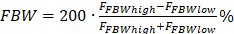
gap between passbands: frequency gap between two
consecutive passbands that belong to the same operating band,
where the RF requirements in the gap are based on co-existence for
un-coordinated operation
Inter-passband gap: The frequency gap between two
supported consecutive passbands that belong to different
operating bands.
Maximum passband output power: mean power level
measured per passband at the antenna connector, during
the transmitter ON state in a specified reference condition
Maximum passband TRP output power: mean power level
measured per passband during the transmitter ON state in a
specified reference condition and corresponding to the declared
rated passband TRP output power (Prated,p,,TRP)
Measurement bandwidth: RF bandwidth in which an
emission level is specified
multi-band connector: Antenna Connector for
a Multi-band repeater.
Multi-band repeater:Repeater Type 1-C
whose antenna connector is associated with a transmitter and/or
receiver that is characterized by the ability to process two or more
passband(s) in common active RF components simultaneously,
where at least one passband is configured at a different
operating band than the other passband(s) and where this
different operating band is not a sub-band or superseding-band of
another supported operating band
Nominal channel bandwidth: Bandwidth calculated as
min(100MHz, BWpassband) in FR1 or min(400MHz,
BWpassband) in FR2. If this bandwidth is not defined for BS
channel bandwidth for the operating band, nominal channel
bandwidth shall be defined as the widest BS channel bandwidth for
the operating band which is narrower than BWpassband.
Non-contiguous spectrum: spectrum consisting of two
or more passbands separated by inter-passband
gap(s).
Operating band: frequency range in which NR operates
(paired or unpaired), that is defined with a specific set of technical
requirements
OTA coverage range: a common range of directions
within which OTA requirements that are neither specified in the OTA
peak directions sets nor as TRP requirement are intended
to be met
OTA peak directions set: set(s) of beam peak
directions within which certain OTA requirements are intended to be
met, where all OTA peak directions set(s) are subsets of
the OTA coverage range
Passband: The frequency range in which the repeater
operates in with operational configuration, this frequency range can
correspond to one or several consecutive nominal channels, if they are
not consecutive each subset of channels shall be considered as an
individual passband, a repeater can have one or several
passbands, all channels within the passband(s) shall
belong to a single operator or collaborating operators.
passband edge: Frequency at the edge of the
passband
Radiated interface boundary:operating band
specific radiated requirements reference where the radiated requirements
apply
Rated beam EIRP: For a declared beam and beam
direction pair, the rated beam EIRP level is the maximum
power that the repeater is declared to radiate at the associated
beam peak direction during the transmitter ON
state
Rated passband output power: mean power level
associated with a passband the manufacturer has declared to be
available at the antenna connector, during the transmitter
ON statein a specified reference condition
Rated passband TRP output power: mean power level
declared by the manufacturer per passband, that the manufacturer has
declared to be available at the RIB during the transmitter ON
state
Rated total output power: mean power level
associated with a particular operating band the manufacturer
has declared to be available at the antenna connector, during
the transmitter ON state in a specified reference condition
Rated total TRP output power: mean power level
associated with a particular operating band, that the
manufacturer has declared to be available at the RIB during the
transmitter ON state in a specified reference condition
Reference beam direction pair: Beam direction pair
in the reference direction declared by the manufacturer.
Repeater type 1-C: Repeater operating at FR1 with a
requirement set consisting only of conducted requirements defined at
individual antenna connectors.
Repeater type 2-O: Repeater operating at FR2 with a
requirement set consisting only of OTA requirements defined at the
RIB
Requirement set: one of the NR requirements set as
defined for NR repeater
single-band connector:Repeater type 1-Cantenna connector supporting operation either in a single
operating band only, or in multiple operating bands
but does not meet the conditions for a multi-band
connector.
Sub-band: A sub-band of an operating band
contains a part of the uplink and downlink frequency range of the
operating band.
sub-block: one contiguous allocated block of
spectrum for transmission and reception by the repeater.
Superseding-band: A superseding-band of an
operating band includes the whole of the uplink and downlink frequency
range of the operating band.
Total radiated power: is the total power radiated by
the antenna
NOTE: The total radiated power is the power radiating in all
direction for two orthogonal polarizations. Total radiated
power is defined in both the near-field region and the far-field
region
Transmitter OFF state: Time period during which the
repeater downlink or uplink is not allowed to transmit in the
corresponding direction.
Transmitter ON state: Time period during which the
repeater is transmitting downlink or uplink signals in the corresponding
direction.
Transmitter transient period: Time period during
which the repeater is changing from the OFF state to the ON state or
vice versa.
3.2 Symbols
For the purposes of the present document, the following symbols
apply:
BWConfigTransmission bandwidth configuration,
where BWConfig = NRB x SCS x 12
BWNominal Nominal channel bandwidth
BWPassbandPassband bandwidth
∆f Separation between the passband edge frequency and the
nominal -3 dB point of the measuring filter closest to the carrier
frequency
∆fmax f_offsetmax minus half of the bandwidth
of the measuring filter
ΔfOBUE Maximum offset of the operating band
unwanted emissions mask from the operating band edge
FDL,low The lowest frequency of the downlink operating
band
FDL,high The highest frequency of the downlink
operating band
FFBWhigh Highest supported frequency within supported
operating band, for which fractional bandwidth support was
declared
FFBWlow Lowest supported frequency within supported
operating band, for which fractional bandwidth support was
declared
Ffilter Filter centre frequency
Foffset,high Frequency offset from FC,high to
the upper passband edge
Foffset,low Frequency offset from FC,low to the
lower passband edge
f_offset Separation between the passband edge frequency and
the centre of the measuring
f_offsetmax The offset to the frequency ΔfOBUE
outside the operating band
Fstep,X Frequency steps for the OTA transmitter spurious
emissions (Category B)
FUL,low The lowest frequency of the uplink operating
band
FUL,high The highest frequency of the uplink operating
band
PEM,n50/n75,ind Declared emission level for Band n50/n75;
ind = a, b
Prated,p,AC Rated passband output power per antenna
connector
Prated,t,AC Rated total output power declared per antenna
connector
Prated,p,EIRP Rated passband EIRP output power
Prated,p,TRP Rated passband TRP output power declared per
RIB
Prated,t,TRP Rated total TRP output power declared per
RIB
Pin,p,AC Input power intended to produce the maximum rated
output power (Prated,p,AC) at the antenna
connector
Pin,p,EIRP Input power intended to produce the maximum
rated output power (Prated,p,TRP) at the RIB
Prated,out,FBWhigh The rated output EIRP for the higher
supported frequency range within supported operating band, for
which fractional bandwidth support was declared
Prated,out,FBWlow The rated output EIRP for the lower
supported frequency range within supported operating band, for
which fractional bandwidth support was declared
Pmax,p,ACMaximum passband output power measured
per antenna connector
Pmax,p,EIRPMaximum passband EIRP output power
when repeater is configured at the rated passband TRP output power
(Prated,p,TRP)
Pmax,p,TRPMaximum passband TRP output power
measured per RIB
WgapInter passband Bandwidth gap size
3.3 Abbreviations
For the purposes of the present document, the abbreviations given in
3GPP TR 21.905 [1] and the following apply. An abbreviation defined in
the present document takes precedence over the definition of the same
abbreviation, if any, in 3GPP TR 21.905 [1].
ACLR Adjacent Channel Leakage Ratio
AoA Angle of Arrival
BW Bandwidth
CACLR Cumulative ACLR
CP-OFDM Cyclic Prefix-OFDM
DFT-s-OFDM Discrete Fourier Transform-spread-OFDM
DL Downlink
EIRP Effective Isotropic Radiated Power
EVM Error Vector Magnitude
FBW Fractional Bandwidth
FR Frequency Range
ITU‑R Radiocommunication Sector of the International
Telecommunication Union
LA Local Area
MR Medium Range
NR New Radio
OBUE Operating Band Unwanted Emissions
OOB Out-of-band
OTA Over-The-Air
QAM Quadrature Amplitude Modulation
RF Radio Frequency
RIB Radiated Interface Boundary
RX Receiver
SCS Sub-Carrier Spacing
TX Transmitter
TRP Total Radiated Power
UL Uplink
WA Wide Area
4 General
4.1
Relationship between Minimum Requirements and Test Requirements
Conformance to the present specification is demonstrated by
fulfilling the test requirements specified in the conformance
specification TS 38.115-1 [7] or TS 38.115-2 [8].
The minimum requirements given in this specification make no
allowance for measurement uncertainty. The test specifications TS
38.115-1 [7] and TS 38.115-2 [8] define test tolerances. These test
tolerances are individually calculated for each test. The test
tolerances are used to relax the minimum requirements in this
specification to create test requirements. For some requirements,
including regulatory requirements, the test tolerance is set to
zero.
The measurement results returned by the test system are compared -
without any modification - against the test requirements as defined by
the shared risk principle.
The shared risk principle is defined in recommendation ITU‑R M.1545
[6].
4.2
Conducted and radiated requirement reference points
4.2.1 Repeater type 1-C
For repeater type 1-C, the requirements are applied at the
repeater antenna connector (BS-side connector or UE-side
connector) for downlink or uplink for the configuration in normal
operating conditions.
Figure 4.2.1-1: Repeater type 1-C downlink and uplink
interface
4.2.2 Repeater type 2-O
For repeater type 2-O, the radiated characteristics are
defined over the air (OTA), where the operating band specific radiated
interface is referred to as the Radiated Interface Boundary (RIB).
Radiated requirements are also referred to as OTA requirements. The
(spatial) characteristics in which the OTA requirements apply are
detailed for each requirement.
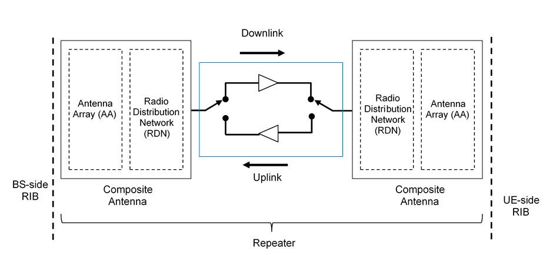
Figure 4.2.2-1: Radiated reference points for repeater type
2-O
4.3 Repeater classes
4.3.1 Repeater class for
downlink
The requirements in this specification apply to downlink Wide Area
repeaters, downlink Medium Range repeaters and downlink Local Area
repeaters unless otherwise stated. The associated deployment scenarios
for each class are exactly the same for repeater with and without
connectors.
For repeater type 1-C and type 2-O, repeater
downlink classes are defined as indicated below:
- Wide Area repeaters are characterised by requirements derived from
Macro Cell scenarios with a repeater to UE minimum distance along the
ground equal to 35 m.
- Medium Range repeaters are characterised by requirements derived
from Micro Cell scenarios with a repeater to UE minimum distance along
the ground equal to 5 m.
- Local Area repeaters are characterised by requirements derived from
Pico Cell scenarios with a repeater to UE minimum distance along the
ground equal to 2 m or from Femto Cell scenarios.
- Note: The requirements in this specification for LA 1-C repeaters
apply to 1-C repeaters with declared output power less than or equal to
LA rated output power limits as in table 6.2.1-1.
4.3.2 Repeater class for uplink
The requirements in this specification apply to uplink Wide Area
repeaters and uplink Local Area repeaters unless otherwise stated. The
associated deployment scenarios for each class are exactly the same for
repeater with and without connectors.
For repeater type 1-C and type 2-O, repeater uplink
classes are defined as indicated below:
- Wide Area repeaters are characterised by requirements derived from
Macro Cell and/or Micro Cell scenarios.
- Local Area repeaters are characterised by requirements derived from
Pico Cell and/or Micro Cell scenarios.
4.4 Regional requirements
Some requirements in the present document may only apply in certain
regions either as optional requirements, or as mandatory requirements
set by local and regional regulation. It is normally not stated in the
3GPP specifications under what exact circumstances the regional
requirements apply, since this is defined by local or regional
regulation.
Table 4.4-1 lists all requirements in the present specification that
may be applied differently in different regions.
Table 4.4-1: List of regional requirements
Clause number
Requirement
Comments
5.2
Operating bands
Some NR operating bands may be applied regionally.
6.2
Repeater output power
For Band n41 and n90 operation in Japan, additional output power
limits shall be applied.
6.2.4,
7.3.4
Repeater output power,
OTA repeater output power:
Additional requirements
These requirements may be applied regionally as additional repeater
output power requirements.
6.5.2
Adjacent Channel Leakage Power Ratio
For Band n41 and n90 operation in Japan, absolute ACLR limits shall
be applied to the sum of the absolute ACLR power over all antenna
connectors for repeater type 1-C.
6.5.3.2,
7.5.3.2
Operating band unwanted emission,
OTA operating band unwanted emissions
Category A or Category B operating band unwanted emissions limits
may be applied regionally.
6.5.3.2.5.1
Operating band unwanted emission
The repeater may have to comply with the additional requirements,
when deployed in regions where those limits are applied, and under the
conditions declared by the manufacturer.
6.5.3.2.5.2
Operating band unwanted emission
The repeater operating in Band n20 may have to comply with the
additional requirements for protection of DTT, when deployed in certain
regions.
6.5.3.2
Operating band unwanted emissions
For Band n41 and n90 operation in Japan, the operating band unwanted
emissions limits shall be applied to the sum of the emission power over
all antenna connectors for repeater type 1-C.
6.5.4.2.1,
7.5.4.2
Tx spurious emissions,
OTA Tx spurious emissions
Category A or Category B spurious emission limits, as defined in
ITU-R Recommendation SM.329 [5], may apply regionally.
6.5.4.2.2,
7.5.4.2.3
Tx spurious emissions: additional requirements,
OTA Tx spurious emissions: additional requirements
These requirements may be applied for the protection of system
operating in frequency ranges other than the repeater operating
band.
6.5.4.2
Transmitter spurious emissions
For Band n41 and n90 operation in Japan, the sum of the spurious
emissions over all antenna connectors for repeater type
1-C shall not exceed the basic limits.
6.5.5.1
Receiver spurious emissions
For Band n41 and n90 operation in Japan, the sum of receiver
spurious emissions requirements over all antenna connectors for
repeater type 1-C shall not exceed minimum
requirements defined in clause 6.5.5.2.
6.7.2
Input intermodulation
Interfering signal positions that are partially or completely
outside of any downlink operating band of the repeater are not
excluded from the requirement in Japan in Band n77, n78, n79.
6.8
Output intermodulation
For Band n41 and n90 operation in Japan, the repeater may have to
comply with the additional requirements, when deployed in certain
regions.
4.5 Applicability of
requirements
In table 4.5-1, the requirement applicability for each requirement
set is defined. For each requirement, the applicable requirement clause
in the specification is identified. Requirements not included in a
requirement set is marked not applicable (NA).
Table 4.5-1: Requirement set applicability
Requirement
Requirement set
Repeater type 1-C
Repeater type 2-O
Repeater output power
6.2
Frequency stability
6.3
Out of band gain
6.4
Unwanted emissions
6.5
Error Vector Magnitude
6.6
NA
Input intermodulation
6.7
Output intermodulation
6.8
Adjacent Channel Rejection Ratio
(ACRR)
6.9
Transmit ON/OFF power
6.10
Repeater output power
7.2
OTA frequency stability
7.3
OTA out of band gain
7.4
OTA unwanted emissions
7.5
OTA Error Vector Magnitude
NA
7.6
OTA input intermodulation
7.7
OTA Adjacent Channel Rejection Ratio
(ACRR)
7.8
OTA transmit ON/OFF power
7.9
4.6
Requirements for contiguous and non-contiguous spectrum
A spectrum allocation where a repeater operates can either be
contiguous or non-contiguous. Unless otherwise stated, the requirements
in the present specification apply for repeater configured for both
contiguous spectrum operation and non-contiguous spectrum operation.
For repeater operation in non-contiguous spectrum, some requirements
apply at the repeater passband edges. For each such
requirement, it is stated how the limits apply relative to the repeater
gap between passbands and the Inter-passband gap
respectively.
4.7
Requirements for repeater capable of multi-band operation
For multi-band connector or multi-band RIB, the RF requirements in
clauses 6 and 7 apply separately to each supported operating band unless
otherwise stated. For some requirements, it is explicitly stated that
specific additions or exclusions to the requirement apply at multi-band
connector(s), and multi-band RIB(s) as detailed in the requirement
clause. For repeater capable of multi-band operation, various structures
in terms of combinations of different downlink and uplink
implementations (multi-band or single band) with mapping to one or more
antenna connectors for repeater type 1-C in different
ways are possible. For multi-band connector(s) the exclusions or
provisions for multi-band apply. For single-band connector(s), the
following applies:
- Single-band transmitter spurious emissions, operating band
unwanted emissions, ACLR, output intermodulation, ACRR and receiver
spurious emissions requirements apply to this connector that is
mapped to single-band.
- If the repeater is configured for single-band operation,
single-band requirements shall apply to this antenna connector
configured for single-band operation and no exclusions or provisions for
multi-band capable repeater are applicable. Single-band requirements are
tested separately at the antenna connector configured for
single-band operation, with all other antenna connectors
terminated.
5 Operating bands
5.1 General
The channel arrangements presented in this clause are based on the
operating bands defined in the present release of
specifications.
NOTE: Other operating bands may be considered in future
releases.
Requirements throughout the RF specifications are in many cases
defined separately for different frequency ranges (FR). The frequency
ranges in which NR can operate according to the present version of the
specification are identified as described in table 5.1-1.
Table 5.1-1: Definition of frequency ranges
Frequency range designation
Corresponding frequency range
FR1
410 MHz – 7125 MHz
FR2
FR2-1
24250 MHz – 52600 MHz
FR2-2
52600 MHz – 71000 MHz
Whenever FR2 is referred, both FR2-1 and FR2-2 frequency sub-ranges
shall be applied, unless otherwise stated.
5.2 Operating bands
NR repeater is designed to operate in the operating bands in
FR1 and FR2-1 defined in TS 38.104 [2] except the operating bands n46,
n96 and n102.
5.3 Channel arrangement
5.3.1 Channel raster
5.3.1.1 NR-ARFCN and channel
raster
The NR-ARFCN and channel raster is the same as specified for BS in TS
38.104 [2], subclause 5.4.2.1.
5.3.1.2 Channel
raster entries for each operating band
The channel raster entries for NR bands for FR1 and FR2-1 defined in
TS 38.104 [2] are the same as specified for BS in TS 38.104 [2], clause
5.4.2.3.
5.3.2 Synchronization raster
5.3.2.1 Synchronization
raster and numbering
The synchronization raster and numbering are the same as specified
for BS in TS 38.104 [2], clause 5.4.3.1.
5.3.2.2
Synchronization raster entries for each operating band
The synchronization raster entries for NR bands for FR1 and FR2-1
defined in TS 38.104 [2] are the same as specified for BS in TS 38.104
[2], clause 5.4.3.3.
6 Conducted characteristics
6.1 General
Unless otherwise stated, the conducted transmitter characteristics
are specified at the antenna connector for repeater type
1-C configuration in normal operating conditions.
Requirements apply in both DL and UL unless otherwise stated or
declared.
For the DL the antenna connector on the BS side is the input
and the antenna connector on the UE side is the output.
For the UL the antenna connector on the UE side is the input
and the antenna connector on the BS side is the output.
6.2 Repeater output power
6.2.1 General
The repeater conducted output power requirement is at the antenna
connector.
The rated passband output power of the repeater type
1-C shall be as specified in table 6.2.1-1 and table 6.2.1-2.
Table 6.2.1-1: Repeater type 1-C DL transmission classes
rated output power limits for repeater classes
Repeater class
Prated,p,AC
Wide Area repeater
Note 1
Medium Range repeater
≤ 38 dBm + X, Note 2
Local Area repeater
≤ 24 dBm + X, Note 2
NOTE 1: There is no upper limit for the
Prated,p,ACrated passband output power of the Wide
Area repeater
NOTE 2: X = 10*log (ceil (passband
bandwidth/20MHz))
Table 6.2.1-2: Repeater type 1-C UL transmission classes
rated output power limits for repeater classes
Repeater class
Prated,p,AC
Wide Area repeater
Note 1
Local Area repeater
≤ 24 dBm+ X, Note 2
NOTE 1: There is no upper limit for the
Prated,p,ACrated passband output power of the Wide
Area repeater.
NOTE 2: X = 10*log (ceil (passband
bandwidth/20MHz))
6.2.2 Minimum requirement
The requirements shall apply with NR signals in the passband
of the repeater at:
The lowest input power (Pin,p,AC) that produces the
rated passband output power (Prated,p,AC).
Up to:
The lowest input power (Pin,p,AC) that produces the
rated passband output power (Prated,p,AC), plus
10dB
In normal conditions, the measured output power, Pmax,p,AC
shall remain within +2 dB and -2 dB of the rated passband output
power Prated,p,AC, declared by the manufacturer.
In extreme conditions, the measured output power,
Pmax,p,AC shall remain within +2.5 dB and -2.5 dB of the
rated passband output power Prated,p,AC, declared by
the manufacturer.
6.3 Frequency stability
6.3.1 General
Frequency stability is the ability to maintain the same frequency on
the output signal with respect to the input signal.
6.3.2 Minimum requirement
The frequency deviation of the output signal with respect to the
input signal shall be no more than ±0,01 PPM.
6.4 Out of band gain
6.4.1 General
Out of band gain refers to the gain of the repeater outside the
passband.
The intended use of a repeater in a system is to amplify the in-band
signals and not to amplify signals outside of the passband.
In the intended application of the repeater, the out of band gain is
less than lowest expected the coupling loss to the nearest source of
emissions.
6.4.2 Minimum requirement
The gain outside the passband shall not exceed the maximum
level specified in table 6.4.2-1 or table 6.4.2-2, where:
- f_offset_CW is the offset between the outer channel edge frequency
of the outer channel in the passband and a CW signal.
Table 6.4.2-1: Out of band gain limits 1 for bands below 2496 MHz
Frequency offset, f_offset_CW
Maximum gain
0,2 ≤ f_offset_CW < 1,0 MHz
60 dB
1,0 ≤ f_offset_CW < 5,0 MHz
45 dB
5,0 ≤ f_offset_CW < 10,0 MHz
45 dB
10,0 MHz ≤ f_offset_CW
35 dB
Table 6.4.2-2: Out of band gain limits 1 for bands above 2496 MHz
Frequency offset, f_offset_CW
Maximum gain
[0,2] < f_offset_CW < 4,0 MHz
60 dB
4,0 < f_offset_CW < 15,0 MHz
45 dB
15,0 MHz < f_offset_CW
35 dB
6.5 Unwanted emissions
6.5.1 General
Unwanted emissions consist of out-of-band emissions and spurious
emissions according to ITU definitions [5]. In ITU terminology, out of
band emissions are unwanted emissions immediately outside the channel
bandwidth resulting from the modulation process and non-linearity in the
transmitter but excluding spurious emissions. Spurious emissions are
emissions which are caused by unwanted transmitter effects such as
harmonics emission, parasitic emission, intermodulation products and
frequency conversion products, but exclude out of band emissions.
The out-of-band emissions requirement for the Repeater transmitter is
specified both in terms of Adjacent Channel Leakage power Ratio (ACLR)
and operating band unwanted emissions (OBUE).
The maximum offset of the operating band unwanted emissions
mask from the operating band edge is ΔfOBUE. The
Operating band unwanted emissions define all unwanted emissions in each
supported downlink operating band of repeater type 1-C
DL and uplink operating band of repeater type 1-C UL,
plus the frequency ranges ΔfOBUE above and ΔfOBUE
below each band. Unwanted emissions outside of this frequency range are
limited by a spurious emissions requirement.
The values of ΔfOBUE are defined in tables 6.5.1-1 and
6.5.1-2 for the NR operating bands.
Table 6.5.1-1: Maximum offset of OBUE outside the downlink
operating band of repeater type 1-C DL
Repeater type
Operating band characteristics
ΔfOBUE (MHz)
Repeater type 1-C
FDL,high – FDL,low < 200 MHz
10
200 MHz ≤ FDL,high – FDL,low ≤ 900 MHz
40
Table 6.5.1-2: Maximum offset of OBUE outside the uplink
operating band of repeater 1-C UL
Repeater type
Operating band characteristics
ΔfOBUE (MHz)
Repeater type 1-C
FUL,high – FUL,low < 200 MHz
10
200 MHz ≤ FUL,high – FUL,low ≤ 900 MHz
40
200 MHz ≤ FUL,high – FUL,low ≤ 900 MHz
40
There is no co-location unwanted emission requirement for LA 1-C
repeaters deployed in Femto cell scenario.
6.5.2 Adjacent Channel
Leakage Power Ratio
6.5.2.1 General
Adjacent Channel Leakage power Ratio (ACLR) is the ratio of the
filtered mean power centred on the assigned channel frequency to the
filtered mean power centred on an adjacent channel frequency.
The requirements shall apply outside the repeater type 1-C
passband whatever the type of transmitter considered (single
carrier or multi-carrier) and for all transmission modes foreseen by the
manufacturer’s specification.
For a repeater operating in non-contiguous
spectrum, the ACLR requirement in clause 6.5.2.2 shall apply in
Gaps between passbands for the frequency ranges defined in
table 6.5.2.2-3, while the CACLR requirement in clause 6.5.2.2 shall
apply in gaps between passbands for the frequency ranges
defined in table 6.5.2.2-4.
For a multi-band connector, the ACLR requirement in clause
6.5.2.2 shall apply in inter-passband gaps for the frequency
ranges defined in table 6.5.2.2-3, while the CACLR requirement in clause
6.5.2.2 shall apply in inter-passband gaps for the frequency
ranges defined in table 6.5.2.2-4.
The requirement shall apply during the transmitter ON
state.
6.5.2.2 Minimum requirements
The ACLR is defined with a square filter of bandwidth equal to the
transmission bandwidth configuration of the transmitted signal
(BWConfig) centred on the assigned channel frequency and a
filter centred on the adjacent channel frequency according to the tables
below.
For repeater type 1-C, for DL (all repeater classes), and
for UL for WA class, either the ACLR (CACLR) absolute minimum
requirements in table 6.5.2.2-2, 6.5.2.2-5 or else the relevant the
ACLR (CACLR) limits in table 6.5.2.2-1, 6.5.2.2-3 or 6.5.2.2-4,
whichever is less stringent, shall apply for each antenna
connector. For UL for LA class, the ACLR (CACLR) limits in table
6.5.2.2-1a, 6.5.2.2-3 or 6.5.2.2-4a shall apply.
For Band n41 and n90 operation in Japan, absolute ACLR limits shall
be applied to the sum of the absolute ACLR power over all antenna
connectors for repeater type 1-C.
Table 6.5.2.2-1: Repeater type 1-C ACLR limit for DL (all
repeater classes) and for UL for Wide Area class
Repeater type 1-C nominal channel bandwidth
BWNominal (MHz)
Repeater type 1-C adjacent channel centre frequency offset
below or above the passband edge
Assumed adjacent channel carrier
(informative)
Filter on the adjacent channel
frequency and corresponding filter bandwidth
NOTE 1: BWNominal is the nominal
channel bandwidth. BWConfig is the transmission
bandwidth configuration assumed for the adjacent channel.
NOTE 2: With SCS that provides the largest transmission bandwidth
configuration (BWConfig).
NOTE 3: The requirements are applicable when the band is also defined
for E-UTRA or UTRA.
The ACLR absolute minimum requirement is specified in
table 6.5.2.2‑2 and is applicable for both contiguous spectrum,
non-contiguous spectrum and multiple bands
Table 6.5.2.2-2: Repeater type 1-C ACLR absolute limit for
DL and UL for WA class, for DL for MR class and for DL for LA class
Repeater category / class
ACLR absolute limit
Category A Wide Area DL and UL
-13 dBm/MHz
Category B Wide Area DL and UL
-15 dBm/MHz
Medium Range DL
-25 dBm/MHz
Local Area DL
-32 dBm/MHz
Table 6.5.2.2-3: Repeater type 1-C ACLR limit in
non-contiguous spectrum or multiple bands for DL (all repeater classes)
and for UL for Wide Area class
Repeater type 1-C nominal channel bandwidth
BWNominal (MHz)
Gap between passbands or
inter-passbandgap size (Wgap) where the
limit applies (MHz)
Repeater type 1-C adjacent
channel centre frequency offset below or above the passband edge (inside
the gap)
Assumed adjacent channel
carrier
Filter on the adjacent channel
frequency and corresponding filter bandwidth
ACLR limit
5, 10, 15, 20
Wgap ≥ 15 (Note 3)
Wgap ≥ 45 (Note 4)
2.5 MHz
5 MHz NR (Note 2)
Square (BWConfig)
45 dB
38 dB (Note 5)
Wgap ≥ 20 (Note 3)
Wgap ≥ 50 (Note 4)
7.5 MHz
5 MHz NR (Note 2)
Square (BWConfig)
45 dB
38 dB (Note 5)
25, 30, 35, 40, 45, 50, 60, 70, 80, 90, 100
Wgap ≥ 60 (Note 4)
Wgap ≥ 30 (Note 3)
10 MHz
20 MHz NR (Note 2)
Square (BWConfig)
45 dB
38 dB (Note 5)
Wgap ≥ 80 (Note 4)
Wgap ≥ 50 (Note 3)
30 MHz
20 MHz NR (Note 2)
Square (BWConfig)
45 dB
38 dB (Note 5)
NOTE 1: BWNominal is the nominal
channel bandwidth. BWConfig is the transmission
bandwidth configuration assumed for the adjacent channel.
NOTE 2: With SCS that provides the largest transmission bandwidth
configuration (BWConfig).
NOTE 3: Applicable in case the repeater type 1-C nominal channel
bandwidth at the other edge of the gap is ≤ 20 MHz.
NOTE 4: Applicable in case the repeater type 1-C nominal channel
bandwidth at the other edge of the gap is > 20 MHz.
NOTE 5: For repeater operating in band n104, ACLR requirement 38 dB
applies. For repeater operating in other bands, ACLR requirement 45 dB
applies.
Table 6.5.2.2-3a: Repeater type 1-C ACLR limit in
non-contiguous spectrum or multiple bands for UL for Local Area
class
Repeater type 1-C nominal channel bandwidth
BWNominal (MHz)
Sub-block or inter-passbandgap size
(Wgap) where the limit applies (MHz)
Repeater type 1-C adjacent channel centre frequency offset
below or above the passband edge (inside the gap)
Assumed adjacent channel carrier
Filter on the adjacent channel frequency and corresponding filter
bandwidth
ACLR limit
5, 10, 15, 20
Wgap ≥ 15 (Note 3)
Wgap ≥ 45 (Note 4)
2.5 MHz
5 MHz NR (Note 2)
Square (BWConfig)
31 dB
Wgap ≥ 20 (Note 3)
Wgap ≥ 50 (Note 4)
7.5 MHz
5 MHz NR (Note 2)
Square (BWConfig)
31 dB
25, 30, 35, 40, 45, 50, 60, 70, 80, 90, 100
Wgap ≥ 60 (Note 4)
Wgap ≥ 30 (Note 3)
10 MHz
20 MHz NR (Note 2)
Square (BWConfig)
31 dB
Wgap ≥ 80 (Note 4)
Wgap ≥ 50 (Note 3)
30 MHz
20 MHz NR (Note 2)
Square (BWConfig)
31 dB
NOTE 1: BWConfig is the transmission
bandwidth configuration assumed for the adjacent channel.
NOTE 2: With SCS that provides the largest transmission bandwidth
configuration (BWConfig).
NOTE 3: Applicable in case the repeater type 1-C nominal channel
bandwidth at the other edge of the gap is ≤ 20 MHz.
NOTE 4: Applicable in case the repeater type 1-C nominal channel
bandwidth at the other edge of the gap is > 20 MHz.
The Cumulative Adjacent Channel Leakage power Ratio (CACLR) in a
gap between passbands or the inter-passband gap is the
ratio of:
a) the sum of the filtered mean power centred on the assigned channel
frequencies for the two carriers adjacent to each side of the gap
between passbands or the inter-passband gap, and
b) the filtered mean power centred on a frequency channel adjacent to
one of the respective repeater type 1-C passband edges.
The assumed filter for the adjacent channel frequency is defined in
table 6.5.3.2-4 and the filters on the assigned channels are defined in
table 6.5.2.2-6.
For operation in non-contiguous spectrum or multiple bands,
the CACLR for NR carriers located on either side of the gap between
passbands or the inter-passband gap shall be higher than
the value specified in table 6.5.2.2-4.
Table 6.5.2.2-4: Repeater type 1-C CACLR limit for DL (all
repeater classes) and for UL for Wide Area class
Repeater type 1-C nominal channel bandwidth
BWNominal (MHz)
Gap between passbands or
inter-passbandgap size (Wgap) where the
limit applies (MHz)
Repeater type 1-C adjacent
channel centre frequency offset below or above the passband edge (inside
the gap)
Assumed adjacent channel
carrier
Filter on the adjacent channel
frequency and corresponding filter bandwidth
CACLR limit
5, 10, 15, 20
5 ≤Wgap< 15 (Note
3)
5 ≤Wgap< 45 (Note 4)
2.5 MHz
5 MHz NR (Note 2)
Square (BWConfig)
45 dB
38 dB (Note 5)
10 < Wgap< 20 (Note
3)
10 ≤Wgap< 50 (Note 4)
7.5 MHz
5 MHz NR (Note 2)
Square (BWConfig)
45 dB
38 dB (Note 5)
25, 30, 35, 40, 45, 50, 60, 70, 80, 90, 100
20 ≤Wgap< 60 (Note
4)
20 ≤Wgap< 30 (Note 3)
10 MHz
20 MHz NR (Note 2)
Square (BWConfig)
45 dB
38 dB (Note 5)
40 < Wgap< 80 (Note
4)
40 ≤Wgap< 50 (Note 3)
30 MHz
20 MHz NR (Note 2)
Square (BWConfig)
45 dB
38 dB (Note 5)
NOTE 1: BWConfig is the transmission
bandwidth configuration assumed for the adjacent channel.
NOTE 2: With SCS that provides the largest transmission bandwidth
configuration (BWConfig).
NOTE 3: Applicable in case the repeater type 1-C nominal channel
bandwidth at the other edge of the gap is ≤ 20 MHz.
NOTE 4: Applicable in case the repeater type 1-C nominal channel
bandwidth at the other edge of the gap is > 20MHz.
NOTE 5: For repeater operating in band n104, ACLR requirement 38 dB
applies. For repeater operating in other bands, ACLR requirement 45 dB
applies.
The CACLR shall be higher than the value specified in
table 6.5.2.2-4a for repeater type 1-C for UL Local Area.
Table 6.5.2.2-4a: Repeater type 1-C CACLR limit for UL for
Local Area
Repeater type 1-C nominal channel bandwidth
BWNominal (MHz)
Gap between passbands or inter-passbandgap size (Wgap) where the limit applies (MHz)
Repeater type 1-C adjacent channel centre frequency offset
below or above the passband edge (inside the gap)
Assumed adjacent channel
carrier
Filter on the adjacent channel
frequency and corresponding filter bandwidth
CACLR limit
5, 10, 15, 20
5 ≤Wgap< 15 (Note 3)
5 ≤Wgap< 45 (Note 4)
2.5 MHz
5 MHz NR (Note 2)
Square (BWConfig)
31 dB
10 < Wgap< 20 (Note 3)
10 ≤Wgap< 50 (Note 4)
7.5 MHz
5 MHz NR (Note 2)
Square (BWConfig)
31 dB
25, 30, 35, 40, 45, 50, 60, 70, 80, 90, 100
20 ≤Wgap< 60 (Note 4)
20 ≤Wgap< 30 (Note 3)
10 MHz
20 MHz NR (Note 2)
Square (BWConfig)
31 dB
40 < Wgap< 80 (Note 4)
40 ≤Wgap< 50 (Note 3)
30 MHz
20 MHz NR (Note 2)
Square (BWConfig)
31 dB
NOTE 1: BWConfig is the transmission
bandwidth configuration assumed for the adjacent channel.
NOTE 2: With SCS that provides the largest transmission bandwidth
configuration (BWConfig).
NOTE 3: Applicable in case the repeater type 1-C nominal channel
bandwidth at the other edge of the gap is ≤ 20 MHz.
NOTE 4: Applicable in case the repeater type 1-C nominal channel
bandwidth at the other edge of the gap is > 20 MHz.
The CACLR absolute minimum requirement is specified in
table 6.5.2.2‑5.
Table 6.5.2.2-5: Repeater type 1-C CACLR absolute
limit for DL and UL for WA class, for DL for MR class and for
DL for LA class
Repeater type 1-C category / class
CACLR absolute limit
Category A Wide Area DL and UL
-13 dBm/MHz
Category B Wide Area DL and UL
-15 dBm/MHz
Medium Range DL
-25 dBm/MHz
Local Area DL
-32 dBm/MHz
Table 6.5.2.2-6: Filter parameters for the assigned channel
RAT of the carrier adjacent to the gap between passbands or
inter-passband gap
Filter on the assigned channel frequency and corresponding filter
bandwidth
NR
NR of same BW with SCS that provides largest transmission
bandwidth configuration
6.5.3 Operating band unwanted
emissions
6.5.3.1 General
Unless otherwise stated, the operating band unwanted emission (OBUE)
limits for repeater type 1-C DL are defined from
ΔfOBUE below the lowest frequency of each supported downlink
operating band up to ΔfOBUE above the highest
frequency of each supported downlink operating band. The values
of ΔfOBUE are defined in table 6.5.1‑1 for the NR
operating bands.
Unless otherwise stated, the operating band unwanted emission (OBUE)
limits for repeater type 1-C UL are defined from
ΔfOBUE below the lowest frequency of each supported uplink
operating band up to ΔfOBUE above the highest
frequency of each supported uplink operating band. The values
of ΔfOBUE are defined in table 6.5.1‑2 for the NR
operating bands.
The requirements shall apply whatever the type of transmitter
considered and for all transmission modes foreseen by the manufacturer’s
specification. In addition, for repeater type 1-C operating in
non-contiguous spectrum, the requirements apply inside any
gap between passbands. In addition, for a repeater type
1-C operating in multiple bands, the requirements apply inside any
inter-passbandgap.
Limits are specified in the tables below, where:
- ∆f is the separation between the passband edge frequency
and the nominal -3dB point of the measuring filter closest to the
carrier frequency.
- f_offset is the separation between the passband edge
frequency and the centre of the measuring filter.
- f_offsetmax is the offset to the frequency
ΔfOBUE outside the downlink operating band of
repeater type 1-C DL and uplink operating band of
repeater type 1-C UL, where ΔfOBUE is defined in
tables 6.5.1-1 and 6.5.1-2.
- ∆fmax is equal to f_offsetmax minus half of
the bandwidth of the measuring filter.
For a multi-band connector inside any inter-passband
gaps with Wgap < 2*ΔfOBUE, a combined
minimum requirement shall be applied which is the cumulative sum of the
minimum requirement specified at the repeater type 1-C passband
edges on each side of the inter-passband gap. The minimum
requirement for repeater type 1-C Bandwidth edge is specified
in clauses 6.5.3.2.1 to 6.5.3.2.4 below, where in this case:
- ∆f is the separation between the repeater type 1-C passband
edge frequency and the nominal -3 dB point of the measuring filter
closest to the repeater type 1-C passband edge.
- f_offset is the separation from the repeater type 1-C passband
edge frequency to the centre of the measuring filter.
- f_offsetmax is equal to the inter-passband gap
minus half of the bandwidth of the measuring filter.
- ∆fmax is equal to f_offsetmax minus half of
the bandwidth of the measuring filter.
For a multi-band connector of repeater type 1-C DL,
the operating band unwanted emission limits apply also in a supported
downlink operating band without any carrier transmitted, in the
case where there are carrier(s) transmitted in another supported
downlink operating band. In this case, no cumulative minimum
requirement is applied in the inter-band gap between a
supported downlink operating band with carrier(s) transmitted
and a supported downlink operating band without any carrier
transmitted and
- In case the inter-band gap between a supported downlink
operating band with carrier(s) transmitted and a supported
downlink operating band without any carrier transmitted is less
than 2*ΔfOBUE, f_offsetmax shall be the offset to
the frequency ΔfOBUE MHz outside the outermost edges of the
two supported downlink operating bands and the operating band
unwanted emission minimum requirement of the band where there are
carriers transmitted, as defined in the tables of the present clause,
shall apply across both downlink bands.
- In other cases, the operating band unwanted emission minimum
requirement of the band where there are carriers transmitted, as defined
in the tables of the present clause for the largest frequency offset
(∆fmax), shall apply from ΔfOBUE MHz below the
lowest frequency, up to ΔfOBUE MHz above the highest
frequency of the supported downlink operating band without any
carrier transmitted.
For a multi-band connector of repeater type 1-C UL,
the operating band unwanted emission limits apply also in a supported
uplink operating band without any carrier transmitted, in the
case where there are carrier(s) transmitted in another supported uplink
operating band. In this case, no cumulative minimum requirement
is applied in the inter-band gap between a supported uplink
operating band with carrier(s) transmitted and a supported
uplink operating band without any carrier transmitted and
- In case the inter-band gap between a supported uplink operating
band with carrier(s) transmitted and a supported uplink operating band
without any carrier transmitted is less than 2* ΔfOBUE,
f_offsetmax shall be the offset to the frequency ΔfOBUE MHz
outside the outermost edges of the two supported uplink operating bands
and the operating band unwanted emission minimum requirement of the band
where there are carriers transmitted, as defined in the tables of the
present clause, shall apply across both uplink bands.
- In other cases, the operating band unwanted emission minimum
requirements of the band where there are carriers transmitted, as
defined in the tables of the present clause for the largest frequency
offset (∆fmax), shall apply from ΔfOBUE MHz below the lowest
frequency, up to ΔfOBUE MHz above the highest frequency of
the supported uplink operating band without any carrier transmitted.
In addition, inside any gap between passbands for a
single-band connector operating in non-contiguous
spectrum, a combined minimum requirement shall be applied which is
the cumulative sum of the minimum requirement specified for the adjacent
sub-blocks on each side of the gap between passbands.
The minimum requirement for each sub-block is specified in
clauses 6.5.3.2.1 to 6.5.3.2.4 below, where in this case:
- ∆f is the separation between the sub-block edge frequency
and the nominal -3 dB point of the measuring filter closest to the
sub-block edge.
- f_offset is the separation between the sub-block edge
frequency and the centre of the measuring filter.
- f_offsetmax is equal to the gap between
passbands bandwidth minus half of the bandwidth of the measuring
filter.
- ∆fmax is equal to f_offsetmax minus half of
the bandwidth of the measuring filter.
For Wide Area repeater type 1-C, the requirements of either
clause 6.5.3.2.1 (Category A limits) or clause 6.5.3.2.2 (Category B
limits) shall apply.
For Medium Range repeater type 1-C, the requirements in
clause 6.5.3.2.3 shall apply (Category A and B).
For Local Area repeater type 1-C, the requirements of clause
6.5.3.2.4 shall apply (Category A and B).
The application of either Category A or Category B minimum
requirements shall be the same as for Transmitter spurious emissions in
clause 6.5.4.
For Band n41 and n90 operation in Japan, the operating band unwanted
emissions limits shall be applied to the sum of the emission power over
all antenna connectors for repeater type 1-C.
In addition to, for the part of passband where there is no input
signal at DL input port, the requirements in table 6.5.2.2-2 shall
apply. In addition to, for the part of passband where there is no input
signal at UL input port, the requirements in clause 6.5.3.2.6 shall
apply.
6.5.3.2 Minimum requirements
6.5.3.2.1
Minimum requirements for Wide Area repeater type 1-C (Category A)
For repeater operating in Bands n5, n8, n12, n13, n14, n18, n26, n28,
n29, n71, n85, minimum requirements are specified in table
6.5.3.2.1‑1.
Table 6.5.3.2.1-1: Wide Area repeater type 1-C operating
band unwanted emission minimum requirements (NR bands below 1 GHz) for
Category A
Frequency offset of measurement filter ‑3dB point, ∆f
Frequency offset of measurement filter centre frequency,
f_offset
Minimum requirements (Notes 1, 2)
Measurement bandwidth
0 MHz ≤ ∆f < 5 MHz
0.05 MHz ≤ f_offset < 5.05 MHz
100 kHz
5 MHz ≤ ∆f <
min(10 MHz, ∆fmax)
5.05 MHz ≤ f_offset <
min(10.05 MHz, f_offsetmax)
-14 dBm
100 kHz
10 MHz ≤ ∆f ≤ ∆fmax
10.05 MHz ≤ f_offset < f_offsetmax
-13 dBm (Note 3)
100 kHz
NOTE 1: For a repeater type 1-C supporting
non-contiguous spectrum operation within any operating
band, the emission limits within gaps between passbands is
calculated as a cumulative sum of contributions from adjacent
sub-blocks on each side of the gap between passbands.
Exception is ∆f ≥ 10MHz from both adjacent sub-blocks on each
side of the gap between passbands, where the emission limits
within gaps between passbands shall be ‑13 dBm/1 MHz.
NOTE 2: For a multi-band connector with inter-passband
gap < 2*ΔfOBUE the emission limits within the
inter-passband gaps is calculated as a cumulative sum of
contributions from adjacent sub-blocks or passband on
each side of the inter-passband gap, where the contribution
from the far-end sub-block or passband shall be scaled
according to the measurement bandwidth of the near-end
sub-block or passband.
NOTE 3: The requirement is not applicable when ∆fmax <
10 MHz.
For repeater operating in Bands n1, n2, n3, n7, n24, n25, n30, n34,
n38, n39, n40, n41, n48, n50, n65, n66, n70, n74, n75, n77, n78, n79,
n90, n92, n94, minimum requirements are specified in table
6.5.3.2.1-2.
Table 6.5.3.2.1-2: Wide Area repeater type 1-Coperating
band unwanted emission minimum requirements (NR bands above 1 GHz)
for Category A
Frequency offset of measurement filter ‑3dB point, ∆f
Frequency offset of measurement filter centre frequency,
f_offset
Minimum requirement (Notes 1, 2)
Measurement bandwidth
0 MHz ≤ ∆f < 5 MHz
0.05 MHz ≤ f_offset < 5.05 MHz
100 kHz
5 MHz ≤ ∆f <
min(10 MHz, ∆fmax)
5.05 MHz ≤ f_offset <
min(10.05 MHz, f_offsetmax)
-14 dBm
100 kHz
10 MHz ≤ ∆f ≤ ∆fmax
10.5 MHz ≤ f_offset < f_offsetmax
-13 dBm (Note 3)
1MHz
NOTE 1: For a repeater type 1-C supporting
non-contiguous spectrum operation within any operating
band, the emission limits within gaps between passbands is
calculated as a cumulative sum of contributions from adjacent
sub-blocks on each side of the gap between passbands,
where the contribution from the far-end sub-block shall be
scaled according to the measurement bandwidth of the near-end
sub-block. Exception is f ≥ 10MHz from both adjacent
sub-blocks on each side of the gap between passbands,
where the emission limits within gaps between passbands shall
be ‑13 dBm/1 MHz.
NOTE 2: For a multi-band connector with inter-passband
gap < 2*ΔfOBUE the emission limits within the
inter-passband gaps is calculated as a cumulative sum of
contributions from adjacent sub-blocks or passband on
each side of the inter-passband gap, where the contribution
from the far-end sub-block or passband shall be scaled
according to the measurement bandwidth of the near-end
sub-block or passband.
NOTE 3: The requirement is not applicable when ∆fmax <
10 MHz.
6.5.3.2.2
Minimum requirements for Wide Area repeater type 1-C (Category
B)
For Category B Operating band unwanted emissions, there are two
options for the minimum requirements that may be applied
regionally. Either the minimum requirements in clause
6.5.3.2.2.1 or clause 6.5.3.2.2.2 shall be applied.
6.5.3.2.2.1
Category B requirements (Option 1)
For repeater type 1-C operating in Bands n5, n8, n12, n20,
n26, n28, n29, n67, n71, n85, the minimum requirements are specified in
table 6.5.3.2.2.1-1:
Table 6.5.3.2.2.1-1: Wide Area repeater type 1-C operating
band unwanted emission minimum requirements (NR bands below 1 GHz) for
Category B
Frequency offset of measurement filter ‑3dB point, ∆f
Frequency offset of measurement filter centre frequency,
f_offset
Minimum requirement (Notes 1, 2)
Measurement bandwidth
0 MHz ≤ ∆f < 5 MHz
0.05 MHz ≤ f_offset < 5.05 MHz
100 kHz
5 MHz ≤ ∆f <
min(10 MHz, ∆fmax)
5.05 MHz ≤ f_offset <
min(10.05 MHz, f_offsetmax)
-14 dBm
100 kHz
10 MHz ≤ ∆f ≤ ∆fmax
10.05 MHz ≤ f_offset < f_offsetmax
-16 dBm (Note 3)
100 kHz
NOTE 1: For a repeater type 1-C supporting
non-contiguous spectrum operation within any operating
band, the emission limits within gaps between passbands is
calculated as a cumulative sum of contributions from adjacent
sub-blocks on each side of the gap between passbands.
Exception is ∆f ≥ 10MHz from both adjacent sub-blocks on each
side of the gap between passbands, where the emission limits
within gaps between passbands shall be ‑15 dBm/1 MHz.
NOTE 2: For a multi-band connector with inter-passband
gap < 2*ΔfOBUE the emission limits within the
inter-passband gaps is calculated as a cumulative sum of
contributions from adjacent sub-blocks or passband on
each side of the inter-passband gap.
NOTE 3: The requirement is not applicable when ∆fmax <
10 MHz.
For repeater operating in Bands n1, n2, n3, n7, n25, n34, n38, n39,
n40, n41, n48, n50, n65, n66, n70, n75, n77, n78, n79, n90, n92, n94,
minimum requirements are specified in table 6.5.3.2.2.1-2.
Table 6.5.3.2.2.1-2: Wide Area repeater type 1-C operating
band unwanted emission minimum requirements for Category B
Frequency offset of measurement filter ‑3dB point, ∆f
Frequency offset of measurement filter centre frequency,
f_offset
Minimum requirements (Notes 1, 2)
Measurement bandwidth
0 MHz ≤ ∆f < 5 MHz
0.05 MHz ≤ f_offset < 5.05 MHz
100 kHz
5 MHz ≤ ∆f <
min(10 MHz, ∆fmax)
5.05 MHz ≤ f_offset <
min(10.05 MHz, f_offsetmax)
-14 dBm
100 kHz
10 MHz ≤ ∆f ≤ ∆fmax
10.5 MHz ≤ f_offset < f_offsetmax
-15 dBm (Note 3)
1MHz
NOTE 1: For a repeater type 1-C supporting
non-contiguous spectrum operation within any operating
band, the emission limits within gaps between passbands is
calculated as a cumulative sum of contributions from adjacent
sub-blocks on each side of the gap between passbands,
where the contribution from the far-end sub-block shall be
scaled according to the measurement bandwidth of the near-end
sub-block. Exception is f ≥ 10MHz from both adjacent
sub-blocks on each side of the gap between passbands,
where the emission limits within gaps between passbands shall
be ‑15 dBm/1 MHz.
NOTE 2: For a multi-band connector with inter-passband
gap < 2*ΔfOBUE the emission limits within the
inter-passband gaps is calculated as a cumulative sum of
contributions from adjacent sub-blocks or passband on
each side of the inter-passband gap, where the contribution
from the far-end sub-block or passband shall be scaled
according to the measurement bandwidth of the near-end
sub-block or passband.
NOTE 3: The requirement is not applicable when ∆fmax <
10 MHz.
For repeater type 1-C operating in Band n104, the limits are
specified in tables 6.5.3.2.2.1-2a:
Table 6.5.3.2.2.1-2a: Wide Area repeater type 1-C operating
band unwanted emission limits for band n104 for Category B
Frequency offset of measurement filter ‑3dB point, ∆f
Frequency offset of measurement filter centre frequency,
f_offset
Basic limits
Measurement bandwidth
0 MHz ≤ ∆f < 20 MHz
0.05 MHz ≤ f_offset < 20.05 MHz
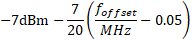
100 kHz
20 MHz ≤ ∆f <
min(40 MHz, ∆fmax)
20.05 MHz ≤ f_offset <
min(40.05 MHz, f_offsetmax)
-14 dBm
100 kHz
40 MHz ≤ ∆f ≤ ∆fmax
40.5 MHz ≤ f_offset < f_offsetmax
-15 dBm (Note 3)
1MHz
NOTE 1: For a repeater type 1-C supporting
non-contiguous spectrum operation within any operating
band, the emission limits within gaps between passbands is
calculated as a cumulative sum of contributions from adjacent
sub-blocks on each side of the gap between passband,
where the contribution from the far-end sub-block shall be
scaled according to the measurement bandwidth of the near-end
sub-block. Exception is f ≥ 40MHz from both adjacent
sub-blocks on each side of the gap between passband,
where the emission limits within gaps between passbands shall
be ‑15 dBm/1 MHz.
NOTE 2: For a multi-band connector with inter-passband
gap < 2*ΔfOBUE the emission limits within the
inter-passband gaps is calculated as a cumulative sum of
contributions from adjacent sub-blocks or passband on
each side of the inter-passband gap, where the contribution
from the far-end sub-block or passband shall be scaled
according to the measurement bandwidth of the near-end
sub-block or passband.
NOTE 3: The requirement is not applicable when ∆fmax <
40 MHz.
6.5.3.2.2.2
Category B requirements (Option 2)
The limits in this clause are intended for Europe and may be applied
regionally for repeater type 1-C operating in bands n1, n3, n7,
n8, n38, n65.
For a repeater type 1-C operating in bands n1, n3, n7, n8,
n38 or n65, minimum requirements are specified in
table 6.5.3.2.2.2-1:
Table 6.5.3.2.2.2-1: Regional Wide Area repeater type 1-C
operating band unwanted emission minimum requirements for Category B
Frequency offset of measurement filter ‑3dB point, ∆f
Frequency offset of measurement filter centre frequency,
f_offset
Minimum requirements (Notes 1, 2)
Measurement bandwidth
0 MHz ≤ ∆f < 0.2 MHz
0.015 MHz ≤ f_offset < 0.215 MHz
-14 dBm
30 kHz
0.2 MHz ≤ ∆f < 1 MHz
0.215 MHz ≤ f_offset < 1.015 MHz
30 kHz
(Note 4)
1.015 MHz ≤ f_offset < 1.5 MHz
-26 dBm
30 kHz
1 MHz ≤ ∆f ≤
min(10 MHz, ∆fmax)
1.5 MHz ≤ f_offset <
min(10.5 MHz, f_offsetmax)
-13 dBm
1 MHz
10 MHz ≤ ∆f ≤ ∆fmax
10.5 MHz ≤ f_offset < f_offsetmax
-15 dBm (Note 3)
1 MHz
NOTE 1: For a repeater type 1-C supporting
non-contiguous spectrum operation within any operating
band, the emission limits within gaps between passbands is
calculated as a cumulative sum of contributions from adjacent
sub-blocks on each side of the gap between passbands,
where the contribution from the far-end sub-block shall be
scaled according to the measurement bandwidth of the near-end
sub-block. Exception is ∆f ≥ 10MHz from both adjacent
sub-blocks on each side of the gap between passbands,
where the emission limits within gaps between passbands shall
be ‑15 dBm/1 MHz.
NOTE 2: For a multi-band connector with inter-passband
gap < 2*ΔfOBUE the emission limits within the
inter-passband gaps is calculated as a cumulative sum of
contributions from adjacent sub-blocks or passband on
each side of the inter-passband gap, where the contribution
from the far-end sub-block or passband shall be scaled
according to the measurement bandwidth of the near-end
sub-block or passband.
NOTE 3: The requirement is not applicable when ∆fmax <
10 MHz.
NOTE 4: This frequency range ensures that the range of values of
f_offset is continuous.
6.5.3.2.3
Minimum requirements for Medium Range repeater type 1-C
(Category A and B) for DL
For Medium Range repeater type 1-C for DL, minimum
requirements are specified in table 6.5.3.2.3-1 and table
6.5.3.2.3-2.
For the tables in this clause for repeater type 1-C,
Prated,x = Prated,p,AC - 10*log (ceil
(BWPassband/20MHz))
Table 6.5.3.2.3-1: Medium Range repeater type 1-Coperating band unwanted emission minimum requirements, 31<
Prated,x ≤ 38 dBm
Frequency offset of measurement filter ‑3dB point, ∆f
Frequency offset of measurement filter centre frequency,
f_offset
Minimum requirements (Notes 1, 2)
Measurement bandwidth
0 MHz ≤ ∆f < 5 MHz
0.05 MHz ≤ f_offset < 5.05 MHz
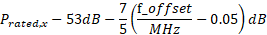
100 kHz
5 MHz ≤ ∆f < min(10 MHz, Δfmax)
5.05 MHz ≤ f_offset < min(10.05 MHz, f_offsetmax)
Prated,x - 60dB
100 kHz
10 MHz ≤ ∆f ≤ ∆fmax
10.05 MHz ≤ f_offset < f_offsetmax
Min(Prated,x - 60dB, -25dBm) (Note 3)
100 kHz
NOTE 1: For a repeater type 1-C DL
supporting non-contiguous spectrum operation within any
operating band the emission limits within gaps between
passbands is calculated as a cumulative sum of contributions from
adjacent sub-blocks on each side of the gap between
passbands. Exception is ∆f ≥ 10MHz from both adjacent
sub-blocks on each side of the gap between passbands,
where the emission limits within gaps between passbands shall
be Min(Prated,x -60dB, ‑25dBm)/100kHz.
NOTE 2: For a multi-band connector with inter-passband
gap < 2*ΔfOBUE the emission limits within the
inter-passband gaps is calculated as a cumulative sum of
contributions from adjacent sub-blocks or passband on
each side of the inter-passband gap.
NOTE 3: The requirement is not applicable when ∆fmax <
10 MHz.
For repeater type 1-C operating in Band n104, the limits are
specified in table 6.5.3.2.3-1a and table 6.5.3.2.3-2a.
Table 6.5.3.2.3-1a. Medium Range repeater type 1-Coperating band unwanted emission limits for band n104, 31<
Prated,x ≤ 38 dBm
Frequency offset of measurement filter ‑3dB point, ∆f
Frequency offset of measurement filter centre frequency,
f_offset
Minimum requirements (Notes 1, 2)
Measurement bandwidth
0 MHz ≤ ∆f < 20 MHz
0.05 MHz ≤ f_offset < 20.05 MHz
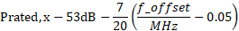
100 kHz
20 MHz ≤ ∆f <
min(40 MHz, ∆fmax)
20.05 MHz ≤ f_offset <
min(40.05 MHz, f_offsetmax)
Prated,x - 60dB
100 kHz
40 MHz ≤ ∆f ≤ ∆fmax
40.05 MHz ≤ f_offset < f_offsetmax
Min(Prated,x - 60dB, -25dBm) (Note 3)
100 kHz
NOTE 1: For a repeater type 1-C DL
supporting non-contiguous spectrum operation within any
operating band the emission limits within gaps between
passbands is calculated as a cumulative sum of contributions from
adjacent sub-blocks on each side of the gap between
passband. Exception is ∆f ≥ 40MHz from both adjacent
sub-blocks on each side of the gap between passband,
where the emission limits within gaps between passbands shall
be Min(Prated,x -60dB, ‑25dBm)/100kHz.
NOTE 2: For a multi-band connector with inter-passband
gap < 2*ΔfOBUE the emission limits within the
inter-passband gaps is calculated as a cumulative sum of
contributions from adjacent sub-blocks or passband on
each side of the inter-passband gap.
NOTE 3: The requirement is not applicable when ∆fmax <
40 MHz.
Table 6.5.3.2.3-2: Medium Range repeater type 1-C operating
band unwanted emission minimum requirements, Prated,x ≤ 31
dBm
Frequency offset of measurement filter ‑3dB point, ∆f
Frequency offset of measurement filter centre frequency,
f_offset
Minimum requirements (Notes 1, 2)
Measurement bandwidth
0 MHz ≤ ∆f < 5 MHz
0.05 MHz ≤ f_offset < 5.05 MHz
100 kHz
5 MHz ≤ ∆f < min(10 MHz, Δfmax)
5.05 MHz ≤ f_offset < min(10.05 MHz, f_offsetmax)
-29 dBm
100 kHz
10 MHz ≤ ∆f ≤ ∆fmax
10.05 MHz ≤ f_offset < f_offsetmax
-29 dBm (Note 3)
100 kHz
NOTE 1: For a repeater type 1-C DL
supporting non-contiguous spectrum operation within any
operating band the emission limits within gaps between
passbands is calculated as a cumulative sum of contributions from
adjacent sub-blocks on each side of the gap between
passbands. Exception is f ≥ 10MHz from both adjacent
sub-blocks on each side of the gap between passbands,
where the emission limits within gaps between passbands shall
be -29dBm/100kHz.
NOTE 2: For a multi-band connector with inter-passband
gap < 2*ΔfOBUE the emission limits within the
inter-passband gaps is calculated as a cumulative sum of
contributions from adjacent sub-blocks or passband on
each side of the inter-passband gap.
NOTE 3: The requirement is not applicable when ∆fmax <
10 MHz.
Table 6.5.3.2.3-2a. Medium Range repeater type 1-C operating
band unwanted emission limits for band 104, Prated,x ≤ 31
dBm
Frequency offset of measurement filter ‑3dB point, ∆f
Frequency offset of measurement filter centre frequency,
f_offset
Minimum requirements (Notes 1, 2)
Measurement bandwidth
0 MHz ≤ ∆f < 20 MHz
0.05 MHz ≤ f_offset < 20.05 MHz
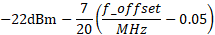
100 kHz
20 MHz ≤ ∆f <
min(40 MHz, ∆fmax)
20.05 MHz ≤ f_offset <
min(40.05 MHz, f_offsetmax)
-29 dBm
100 kHz
40 MHz ≤ ∆f ≤ ∆fmax
40.05 MHz ≤ f_offset < f_offsetmax
-29 dBm
100 kHz
NOTE 1: For a repeater type 1-C DL
supporting non-contiguous spectrum operation within any
operating band the emission limits within gaps between
passbands is calculated as a cumulative sum of contributions from
adjacent sub-blocks on each side of the gap between
passband. Exception is f ≥ 40MHz from both adjacent
sub-blocks on each side of the gap between passband,
where the emission limits within gaps between passbands shall
be -29dBm/100kHz.
NOTE 2: For a multi-band connector with inter-passband
gap < 2*ΔfOBUE the emission limits within the
inter-passband gaps is calculated as a cumulative sum of
contributions from adjacent sub-blocks or passband on
each side of the inter-passband gap.
NOTE 3: The requirement is not applicable when ∆fmax <
40 MHz.
6.5.3.2.4
Minimum requirements for Local Area repeater type 1-C (Category
A and B)
For Local Area repeater type 1-C, minimum
requirements are specified in table 6.5.3.2.4-1.
Table 6.5.3.2.4-1: Local Area repeater type 1-C operating
band unwanted emission limits
Frequency offset of measurement filter ‑3dB point, ∆f
Frequency offset of measurement filter centre frequency,
f_offset
Minimum requirements (Notes 1, 2)
Measurement bandwidth
0 MHz ≤ ∆f < 5 MHz
0.05 MHz ≤ f_offset < 5.05 MHz
100 kHz
5 MHz ≤ ∆f < min(10 MHz, Δfmax)
5.05 MHz ≤ f_offset < min(10.05 MHz, f_offsetmax)
-37 dBm
100 kHz
10 MHz ≤ ∆f ≤ ∆fmax
10.05 MHz ≤ f_offset < f_offsetmax
-37 dBm (Note 10)
100 kHz
NOTE 1: For a repeater type 1-C supporting
non-contiguous spectrum operation within any operating
band the emission limits within gaps between passbands is
calculated as a cumulative sum of contributions from adjacent
sub-blocks on each side of the gap between passbands.
Exception is f ≥ 10MHz from both adjacent sub-blocks on each
side of the gap between passbands, where the emission limits
within gaps between passbands shall be -37dBm/100kHz.
NOTE 2: For a multi-band connector with inter-passband
gap < 2*ΔfOBUE the emission limits within the
inter-passband gaps is calculated as a cumulative sum of
contributions from adjacent sub-blocks or passband on
each side of the inter-passband gap
NOTE 3: The requirement is not applicable when ∆fmax <
10 MHz.
For repeater type 1-C operating in Band n104, minimum
requirements are specified in table 6.5.3.2.4-1a.
Table 6.5.3.2.4-1a. Local Area repeater type 1-C operating
band unwanted emission limits for band n104
Frequency offset of measurement filter ‑3dB point, ∆f
Frequency offset of measurement filter centre frequency,
f_offset
Minimum requirements(Notes 1, 2)
Measurement bandwidth
0 MHz ≤ ∆f < 20 MHz
0.05 MHz ≤ f_offset < 20.05 MHz
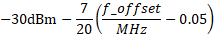
100 kHz
20 MHz ≤ ∆f <
min(40 MHz, ∆fmax)
20.05 MHz ≤ f_offset <
min(40.05 MHz, f_offsetmax)
-37 dBm
100 kHz
40 MHz ≤ ∆f ≤ ∆fmax
40.05 MHz ≤ f_offset < f_offsetmax
-37 dBm
100 kHz
NOTE 1: For a repeater supporting non-contiguous
spectrum operation within any operating band the emission
limits within sub-block gaps is calculated as a cumulative sum
of contributions from adjacent sub-blocks on each side of the
sub-block gap. Exception is ∆f ≥ 40MHz from both adjacent
sub-blocks on each side of the sub-block gap, where
the emission limits within sub-block gaps shall be
-37dBm/100kHz.
NOTE 2: For a multi-band connector with Inter RF
Bandwidth gap < 2*ΔfOBUE the emission limits within
the Inter RF Bandwidth gaps is calculated as a cumulative sum
of contributions from adjacent sub-blocks or RF Bandwidth on
each side of the Inter RF Bandwidth gap
NOTE 3: The requirement is not applicable when ∆fmax <
40 MHz.
6.5.3.2.5
Minimum requirements for additional requirements
6.5.3.2.5.1 Limits in FCC
Title 47
In addition to the requirements in clauses 6.5.3.2.1, 6.5.3.2.2,
6.5.3.2.3 and 6.5.3.2.4, the repeater type 1-C may have to
comply with the applicable emission limits established by FCC Title 47
[10], when deployed in regions where those limits are applied, and under
the conditions declared by the manufacturer.
6.5.3.2.5.2 Protection of DTT
In certain regions the following requirement may apply for protection
of DTT. For repeater type 1-C operating in Band n20, the level
of emissions in the band 470-790 MHz, measured in an 8 MHz filter
bandwidth on centre frequencies Ffilter according to table
6.5.3.2.5.2-1, a minimum requirements PEM,N is declared by
the manufacturer. This requirement applies in the frequency range
470-790 MHz even though part of the range falls in the spurious
domain.
Table 6.5.3.2.5.2-1: Declared emissions minimum requirement
for protection of DTT
Filter centre frequency,
Ffilter
Measurement
bandwidth
Declared emission minimum
requirement (dBm)
Ffilter = 8*N + 306
(MHz);
21 ≤ N ≤ 60
8 MHz
PEM,N
Note: The regional requirement is defined in terms of EIRP (effective
isotropic radiated power), which is dependent on both the repeater
emissions at the antenna connector and the deployment
(including antenna gain and feeder loss). The requirement defined above
provides the characteristics of the repeater needed to verify compliance
with the regional requirement. Compliance with the regional requirement
can be determined using the method outlined in TS 36.104 [20], annex
F.
6.5.3.2.6
Minimum requirements inside passband with no UL input signal
The requirement is defined as a function of frequency offset from the
edge of some part of passband with non-zero input signal. The
requirement is measured as the ratio of the repeater output power in a
zero-input basic unit to the repeater output power in a non-zero input
basic unit. Basic unit equal to 360 KHz.
The average of the basic requirements over 10 sub-frames shall not
exceed the values specified in table 6.5.3.2.6-1.
Table 6.5.3.2.6-1: Minimum requirements inside passband with no UL
input signal
Parameter description
Unit
Limit (NOTE 1)
Applicable Frequencies
General
dB
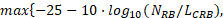
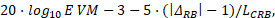
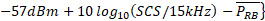
Any zero-input basic unit (NOTE 2)
IQ Image
dB
-28
Image frequencies when output power > 10 dBm
Image frequencies (NOTES 2, 3)
-25
Image frequencies when output power ≤ 10 dBm
Carrier leakage
dBc
-28
Output power > 10 dBm
Carrier leakage frequency (NOTES 4, 5)
-25
0 dBm ≤ Output power ≤ 10 dBm
-20
-30 dBm ≤ Output power < 0 dBm
-10
-40 dBm ≤ Output power < -30 dBm
NOTE 1: requirement is evaluated in each zero-input
basic unit. For each such basic unit, the minimum requirement is
calculated as the higher of 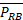 - 30 dB and the power sum of all limit values
(General, IQ Image or Carrier leakage) that apply. is defined in
NOTE 10.
NOTE 2: The measurement bandwidth is one basic unit and the limit is
expressed as a ratio of measured power in one zero-input basic unit to
the measured average power per non-zero input basic unit, where the
averaging is done across all non-zero input parts of the passband.
NOTE 3: The applicable frequencies for this limit are those that are
enclosed in the reflection of the non-zero input part of passband, based
on symmetry with respect to the carrier leakage frequency, but excluding
any non-zero input basic units.
NOTE 4: The measurement bandwidth is 1 basic unit and the limit is
expressed as a ratio of measured power in one zero-input basic unit to
the measured total power in all non-zero input basic units
NOTE 5: The applicable frequencies are those that are enclosed either
in the basic unit containing the carrier leakage frequency, or in the
two basic units immediately adjacent to the carrier leakage frequency
but excluding any non-zero input basic units.
NOTE 6: LCRB is the 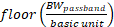.
NOTE 7: NRB is the 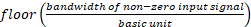.
NOTE 8: EVM is the limit specified in table 6.6.2.2-1 for
the modulation format used in the non-zero input basic units..
NOTE 9: is the starting frequency
offset between the end of nearest non-zero input basic unit and the
measured zero-input basic unit (e.g. ∆RB = 1 or
∆RB = -1 for the first zero-input basic unit outside
of the non-zero input part of passband.
NOTE 10: is an average of the
transmitted power over 10 sub-frames normalized by the number of
non-zero input basic units, measured in dBm.
6.5.4 Transmitter spurious
emissions
6.5.4.1 General
For repeater type 1-C, the transmitter spurious emission
limits shall apply from 9 kHz to 12.75 GHz, excluding
- the frequency range from ΔfOBUE below the lowest
frequency of each supported downlink operating band, up to
ΔfOBUE above the highest frequency of each supported downlink
operating band, where the ΔfOBUE is defined in
table 6.5.1-1 for downlink, or
- the frequency range from ΔfOBUE below the lowest
frequency of each supported uplink operating band, up to
ΔfOBUE above the highest frequency of each supported uplink
operating band, where the ΔfOBUE is defined in
table 6.5.1-2 for uplink
For some operating bands, the upper limit is higher than
12.75 GHz in order to comply with the 5th harmonic limit of
the downlink operating band, as specified in ITU-R
recommendation SM.329 [5].
For a multi-band connector, for each supported operating
band together with ΔfOBUE around the band is excluded
from the transmitter spurious emissions requirement.
The requirements shall apply whatever the type of transmitter
considered (single carrier or multi-carrier). It applies for all
transmission modes foreseen by the manufacturer's specification.
Unless otherwise stated, all requirements are measured as mean power
(RMS).
For Band n41 and n90 operation in Japan, the sum of the spurious
emissions over all antenna connectors for Repeater type
1-C shall not exceed the minimum requirements defined in
clause 6.5.5.2.
6.5.4.2 Minimum requirements
6.5.4.2.1
General transmitter spurious emissions requirements
The minimum requirements of either table 6.5.4.2.1-1, table
6.5.4.2.1-2 (Category A limits) or table 6.5.4.2.1-3 (Category B limits)
shall apply. The application of either Category A or Category B limits
shall be the same as for operating band unwanted emissions in clause
6.5.3.
Table 6.5.4.2.1-1: General repeater type 1-C transmitter
spurious emission minimum requirements for DL in FR1, Category A
Spurious frequency
range
Minimum requirements
Measurement
bandwidth
Notes
9 kHz – 150 kHz
-13 dBm
1 kHz
Note 1
150 kHz – 30 MHz
10 kHz
Note 1
30 MHz – 1 GHz
100 kHz
Note 1
1 GHz – 12.75 GHz
1 MHz
Note 1, Note 2
12.75 GHz – 5th harmonic of
the upper frequency edge of the DL operating band in GHz
1 MHz
Note 1, Note 2, Note 3
NOTE 1: Measurement
bandwidths as in ITU-R SM.329 [5], s4.1.
NOTE 2: Upper frequency as in ITU-R SM.329 [5], s2.5 table 1.
NOTE 3: For repeater type 1-C DL, this spurious frequency
range applies only for operating bands for which the
5th harmonic of the upper frequency edge of the DL
operating band is reaching beyond 12.75 GHz.
Table 6.5.4.2.1-2: General repeater type 1-C transmitter
spurious emission minimum requirements for UL in FR1, Category A
Spurious frequency range
Minimum requirements
Measurement bandwidth
Notes
9 kHz – 150 kHz
-36 dBm
1 kHz
Note 1
150 kHz – 30 MHz
10 kHz
Note 1
30 MHz – 1 GHz
100 kHz
Note 1
1 GHz – 12.75 GHz
-30 dBm
1 MHz
Note 1, Note 2
12.75 GHz – 5th harmonic of the upper frequency edge of
the UL operating band in GHz
1 MHz
Note 1, Note 2, Note 3
NOTE 1: Measurement bandwidths as in ITU-R
SM.329 [5], s4.1.
NOTE 2: Upper frequency as in ITU-R SM.329 [5], s2.5 table 1.
NOTE 3: For repeater type 1-C UL, this spurious frequency
range applies only for operating bands for which the
5th harmonic of the upper frequency edge of the UL
operating band is reaching beyond 12.75 GHz.
Table 6.5.4.2.1-3: General repeater type 1-C transmitter
spurious emission minimum requirements in FR1, Category B
Spurious frequency range
minimum requirements
Measurement bandwidth
Notes
9 kHz – 150 kHz
-36 dBm
1 kHz
Note 1
150 kHz – 30 MHz
10 kHz
Note 1
30 MHz – 1 GHz
100 kHz
Note 1
1 GHz – 12.75 GHz
-30 dBm
1 MHz
Note 1, Note 2
12.75 GHz – 5th harmonic of the upper frequency edge of
the operating band in GHz
1 MHz
Note 1, Note 2, Note 3
NOTE 1: Measurement bandwidths as in ITU-R
SM.329 [5], s4.1.
NOTE 2: Upper frequency as in ITU-R SM.329 [5], s2.5 table 1.
NOTE 3: For repeater type 1-C DL, this spurious frequency
range applies only for operating bands for which the
5th harmonic of the upper frequency edge of the DL
operating band is reaching beyond 12.75 GHz.
For repeater type 1-C UL, this spurious frequency range applies
only for operating bands for which the 5th harmonic
of the upper frequency edge of the UL operating band is
reaching beyond 12.75 GHz.
These requirements may be applied for the protection of system
operating in other frequency ranges. The limits may apply as an optional
protection of such systems that are deployed in the same geographical
area as the repeater-Node, or they may be set by local or regional
regulation as a mandatory requirement for an NR operating band.
It is in some cases not stated in the present document whether a
requirement is mandatory or under what exact circumstances that a limit
applies, since this is set by local or regional regulation. An overview
of regional requirements in the present document is given in clause
4.5.
Some requirements may apply for the protection of specific equipment
(UE, MS and/or BS) or equipment operating in specific systems (GSM,
CDMA, UTRA, E-UTRA, NR, etc.) as listed below.
The spurious emission minimum requirements are provided in
table 6.5.4.2.2-1 where requirements for co-existence with the system
listed in the first column apply for repeater type 1-C. For a
multi-band connector, the exclusions and conditions in the Note
column of table 6.5.4.2.2-1 apply for each supported operating
band.
Table 6.5.4.2.2-1: Repeater type 1-C spurious emissions
minimum requirements for co-existence with systems operating in other
frequency bands
System type to co-exist
with
Frequency range for co-existence
requirement
Minimum
requirements
Measurement
bandwidth
Note
GSM900
921 – 960 MHz
-57 dBm
100 kHz
This requirement does not apply to repeater operating in band
n8
876 – 915 MHz
-61 dBm
100 kHz
For the frequency range 880-915 MHz, this requirement does not apply
to repeater operating in band n8, since it is already covered by the
requirement in clause 6.5.5.2.2.
DCS1800
1805 – 1880 MHz
-47 dBm
100 kHz
This requirement does not apply to repeater operating in band
n3.
1710 – 1785 MHz
-61 dBm
100 kHz
This requirement does not apply to repeater operating in band n3,
since it is already covered by the requirement in clause 6.5.5.2.2.
PCS1900
1930 – 1990 MHz
-47 dBm
100 kHz
This requirement does not apply to repeater operating in band n2,
n25 or band n70.
1850 – 1910 MHz
-61 dBm
100 kHz
This requirement does not apply to repeater operating in band n2 or
n25 since it is already covered by the requirement in clause
6.6.5.2.2.
GSM850 or
869 – 894 MHz
-57 dBm
100 kHz
This requirement does not apply to repeater operating in band n5 or
n26.
CDMA850
824 – 849 MHz
-61 dBm
100 kHz
This requirement does not apply to repeater operating in band n5 or
n26, since it is already covered by the requirement in clause
6.6.5.2.2.
UTRA FDD
2110 – 2170 MHz
-52 dBm
1 MHz
This requirement does not apply to repeater operating in band n1 or
n65
Band I or
E-UTRA Band 1 or NR Band n1
1920 – 1980 MHz
-49 dBm
1 MHz
This requirement does not apply to repeater operating in band n1 or
n65, since it is already covered by the requirement in clause
6.6.5.2.2.
UTRA FDD
1930 – 1990 MHz
-52 dBm
1 MHz
This requirement does not apply to repeater operating in band n2 or
n70.
Band II or
E-UTRA Band 2 or NR Band n2
1850 – 1910 MHz
-49 dBm
1 MHz
This requirement does not apply to repeater operating in band n2,
since it is already covered by the requirement in clause 6.6.5.2.2.
UTRA FDD
1805 – 1880 MHz
-52 dBm
1 MHz
This requirement does not apply to repeater operating in band
n3.
Band III or
E-UTRA Band 3 or NR Band n3
1710 – 1785 MHz
-49 dBm
1 MHz
This requirement does not apply to repeater operating in band n3,
since it is already covered by the requirement in clause 6.6.5.2.2.
UTRA FDD Band IV or
E-UTRA Band 4
2110 – 2155 MHz
-52 dBm
1 MHz
This requirement does not apply to repeater operating in band
n66
1710 – 1755 MHz
-49 dBm
1 MHz
This requirement does not apply to repeater operating in band n66,
since it is already covered by the requirement in clause 6.6.5.2.2.
UTRA FDD Band V or
E-UTRA Band 5 or NR Band n5
869 – 894 MHz
-52 dBm
1 MHz
This requirement does not apply to repeater operating in band n5 or
n26.
824 – 849 MHz
-49 dBm
1 MHz
This requirement does not apply to repeater operating in band n5 or
n26, since it is already covered by the requirement in clause
6.6.5.2.2.
UTRA FDD
860 – 890 MHz
-52 dBm
1 MHz
This requirement does not apply to repeater operating in band
n18.
Band VI, XIX or
815 – 830 MHz
-49 dBm
1 MHz
This requirement does not apply to repeater operating in band n18,
since it is already covered by the requirement in clause 6.6.5.2.2.
E-UTRA Band 6, 18, 19 or NR Band n18
830 – 845 MHz
-49 dBm
1 MHz
UTRA FDD Band VII or
E-UTRA Band 7 or NR Band n7
2620 – 2690 MHz
-52 dBm
1 MHz
This requirement does not apply to repeater operating in band
n7.
2500 – 2570 MHz
-49 dBm
1 MHz
This requirement does not apply to repeater operating in band n7,
since it is already covered by the requirement in clause 6.6.5.2.2.
UTRA FDD Band VIII or
E-UTRA Band 8 or NR Band n8
925 – 960 MHz
-52 dBm
1 MHz
This requirement does not apply to repeater operating in band
n8.
880 – 915 MHz
-49 dBm
1 MHz
This requirement does not apply to repeater operating in band n8,
since it is already covered by the requirement in clause 6.6.5.2.2.
UTRA FDD Band IX or
E-UTRA Band 9
1844.9 – 1879.9 MHz
-52 dBm
1 MHz
This requirement does not apply to repeater operating in band
n3.
1749.9 – 1784.9 MHz
-49 dBm
1 MHz
This requirement does not apply to repeater operating in band n3,
since it is already covered by the requirement in clause 6.6.5.2.2.
UTRA FDD Band X or
E-UTRA Band 10
2110 – 2170 MHz
-52 dBm
1 MHz
This requirement does not apply to repeater operating in band
n66
1710 – 1770 MHz
-49 dBm
1 MHz
This requirement does not apply to repeater operating in band n66,
since it is already covered by the requirement in clause 6.6.5.2.2.
UTRA FDD Band XI or XXI or
E-UTRA Band 11 or 21
1475.9 – 1510.9 MHz
-52 dBm
1 MHz
This requirement does not apply to repeater operating in band n50,
n74, n75, n92 or n94.
1427.9 – 1447.9 MHz
-49 dBm
1 MHz
This requirement does not apply to repeater operating in band n50,
n51, n74, n75, n76, n91, n92, n93 or n94.
1447.9 – 1462.9 MHz
-49 dBm
1 MHz
This requirement does not apply to repeater operating in band n50,
n74, n75, n92 or n94.
UTRA FDD Band XII or
E-UTRA Band 12 or NR Band n12
729 – 746 MHz
-52 dBm
1 MHz
This requirement does not apply to repeater operating in band n12 or
n85.
699 – 716 MHz
-49 dBm
1 MHz
This requirement does not apply to repeater operating in band n12
or n85, since it is already covered by the requirement in clause
6.6.5.2.2.
For NR repeater operating in n29, it applies 1 MHz below the Band n29
downlink operating band (Note 5).
UTRA FDD Band XIII or
E-UTRA Band 13
746 – 756 MHz
-52 dBm
1 MHz
This requirement does not apply to repeater operating in band
n13.
777 – 787 MHz
-49 dBm
1 MHz
This requirement does not apply to repeater operating in band n13,
since it is already covered by the requirement in clause 6.6.5.2.2.
UTRA FDD Band XIV or
E-UTRA Band 14 or NR band n14
758 – 768 MHz
-52 dBm
1 MHz
This requirement does not apply to repeater operating in band
n14.
788 – 798 MHz
-49 dBm
1 MHz
This requirement does not apply to repeater operating in band n14,
since it is already covered by the requirement in clause 6.6.5.2.2.
E-UTRA Band 17
734 – 746 MHz
-52 dBm
1 MHz
704 – 716 MHz
-49 dBm
1 MHz
For NR repeater operating in n29, it applies 1 MHz below the Band
n29 downlink operating band (Note 5).
UTRA FDD Band XX or E-UTRA Band 20 or NR Band n20
791 – 821 MHz
-52 dBm
1 MHz
This requirement does not apply to repeater operating in band n20 or
n28.
832 – 862 MHz
-49 dBm
1 MHz
This requirement does not apply to repeater operating in band n20,
since it is already covered by the requirement in clause 6.6.5.2.2.
UTRA FDD Band XXII or E-UTRA Band 22
3510 – 3590 MHz
-52 dBm
1 MHz
This requirement does not apply to repeater operating in band n48,
n77 or n78.
3410 – 3490 MHz
-49 dBm
1 MHz
This requirement does not apply to repeater operating in band n77 or
n78.
E-UTRA Band 24
1525 – 1559 MHz
-52 dBm
1 MHz
This requirement does not apply to repeater operating in band
n24.
1626.5 – 1660.5 MHz
-49 dBm
1 MHz
This requirement does not apply to repeater operating in band n24,
since it is already covered by the requirement in clause 6.6.5.2.2.
UTRA FDD Band XXV or
E-UTRA Band 25 or NR band n25
1930 – 1995 MHz
-52 dBm
1 MHz
This requirement does not apply to repeater operating in band n2,
n25 or n70.
1850 – 1915 MHz
-49 dBm
1 MHz
This requirement does not apply to repeater operating in band n25
since it is already covered by the requirement in clause 6.6.5.2.2. For
repeater operating in Band n2, it applies for 1910 MHz to 1915 MHz,
while the rest is covered in clause 6.6.5.2.2.
UTRA FDD Band XXVI or
E-UTRA Band 26 or NR Band n26
859 – 894 MHz
-52 dBm
1 MHz
This requirement does not apply to repeater operating in band n5 or
n26.
814 – 849 MHz
-49 dBm
1 MHz
This requirement does not apply to repeater operating in band n26
since it is already covered by the requirement in clause 6.6.5.2.2. For
repeater operating in Band n5, it applies for 814 MHz to 824 MHz, while
the rest is covered in clause 6.6.5.2.2.
E-UTRA Band 27
852 – 869 MHz
-52 dBm
1 MHz
This requirement does not apply to repeater operating in Band
n5.
807 – 824 MHz
-49 dBm
1 MHz
This requirement also applies to repeater operating in Band n28,
starting 4 MHz above the Band n28 downlink operating band (Note 5).
E-UTRA Band 28 or NR Band n28
758 – 803 MHz
-52 dBm
1 MHz
This requirement does not apply to repeater operating in band n20,
n67 or n28.
703 – 748 MHz
-49 dBm
1 MHz
This requirement does not apply to repeater operating in band
n28, since it is already covered by the requirement in clause
6.6.5.2.2.
For repeater operating in band n67, it applies for 703 MHz to 736
MHz.
E-UTRA Band 29 or NR Band n29
717 – 728 MHz
-52 dBm
1 MHz
This requirement does not apply to repeater operating in Band n29 or
n85
E-UTRA Band 30 or NR Band n30
2350 – 2360 MHz
-52 dBm
1 MHz
This requirement does not apply to repeater operating in band
n30
2305 – 2315 MHz
-49 dBm
1 MHz
This requirement does not apply to repeater operating in band n30,
since it is already covered by the requirement in clause 6.6.5.2.2.
E-UTRA Band 31
462.5 – 467.5 MHz
-52 dBm
1 MHz
452.5 – 457.5 MHz
-49 dBm
1 MHz
UTRA FDD band XXXII or E-UTRA band 32
1452 – 1496 MHz
-52 dBm
1 MHz
This requirement does not apply to repeater operating in band n50,
n74, n75, n92 or n94.
UTRA TDD Band a) or E-UTRA Band 33
1900 – 1920 MHz
-52 dBm
1 MHz
UTRA TDD Band a) or E-UTRA Band 34 or NR band n34
2010 – 2025 MHz
-52 dBm
1 MHz
This requirement does not apply to repeater operating in Band
n34.
UTRA TDD Band b) or E-UTRA Band 35
1850 – 1910 MHz
-52 dBm
1 MHz
UTRA TDD Band b) or E-UTRA Band 36
1930 – 1990 MHz
-52 dBm
1 MHz
This requirement does not apply to repeater operating in Band n2 or
n25.
UTRA TDD Band c) or E-UTRA Band 37
1910 – 1930 MHz
-52 dBm
1 MHz
UTRA TDD Band d) or E-UTRA Band 38 or NR Band n38
2570 – 2620 MHz
-52 dBm
1 MHz
This requirement does not apply to repeater operating in Band
n38.
UTRA TDD Band f) or E-UTRA Band 39 or NR band n39
1880 – 1920MHz
-52 dBm
1 MHz
This requirement does not apply to repeater operating in Band
n39.
UTRA TDD Band e) or E-UTRA Band 40 or NR Band n40
2300 – 2400MHz
-52 dBm
1 MHz
This requirement does not apply to repeater operating in Band n30 or
n40.
E-UTRA Band 41 or NR Band n41, n90
2496 – 2690 MHz
-52 dBm
1 MHz
This is not applicable to repeater operating in Band n41, n53 or
[n90].
E-UTRA Band 42
3400 – 3600 MHz
-52 dBm
1 MHz
This is not applicable to repeater operating in Band n48, n77 or
n78.
E-UTRA Band 43
3600 – 3800 MHz
-52 dBm
1 MHz
This is not applicable to repeater operating in Band n48, n77 or
n78.
E-UTRA Band 44
703 – 803 MHz
-52 dBm
1 MHz
This is not applicable to repeater operating in Band n28.
E-UTRA Band 45
1447 – 1467 MHz
-52 dBm
1 MHz
E-UTRA Band 46
5150 – 5925 MHz
-52 dBm
1 MHz
E-UTRA Band 47
5855 – 5925 MHz
-52 dBm
1 MHz
E-UTRA Band 48 or NR Band n48
3550 – 3700 MHz
-52 dBm
1 MHz
This is not applicable to repeater operating in Band n48, n77 or
n78.
E-UTRA Band 50 or NR band n50
1432 – 1517 MHz
-52 dBm
1 MHz
This requirement does not apply to repeater operating in Band n50,
n51, n74, n75, n76, n91, n92, n93 or n94.
E-UTRA Band 51 or NR Band n51
1427 – 1432 MHz
-52 dBm
1 MHz
This requirement does not apply to repeater operating in Band n50,
n51, n75, n76, n91, n92, n93 or n94.
E-UTRA Band 53 or NR Band n53
2483.5 - 2495 MHz
-52 dBm
1 MHz
This requirement does not apply to repeater operating in Band n41,
n53 or n90.
E-UTRA Band 65 or NR Band n65
2110 – 2200 MHz
-52 dBm
1 MHz
This requirement does not apply to repeater operating in band n1 or
n65.
1920 – 2010 MHz
-49 dBm
1 MHz
For repeater operating in Band n1, it applies for 1980 MHz to
2010 MHz, while the rest is covered in clause 6.6.5.2.2.
This requirement does not apply to repeater operating in band n65,
since it is already covered by the requirement in clause
6.6.5.2.2.
E-UTRA Band 66 or NR Band n66
2110 – 2200 MHz
-52 dBm
1 MHz
This requirement does not apply to repeater operating in band
n66.
1710 – 1780 MHz
-49 dBm
1 MHz
This requirement does not apply to repeater operating in band n66,
since it is already covered by the requirement in clause 6.6.5.2.2.
E-UTRA Band 67
738 – 758 MHz
-52 dBm
1 MHz
This requirement does not apply to repeater operating in Band n28 or
n67.
E-UTRA Band 68
753 -783 MHz
-52 dBm
1 MHz
This requirement does not apply to repeater operating in band
n28.
698-728 MHz
-49 dBm
1 MHz
For repeater operating in Band n28, this requirement applies between
698 MHz and 703 MHz, while the rest is covered in clause 6.6.5.2.2.
E-UTRA Band 69
2570 – 2620 MHz
-52 dBm
1 MHz
This requirement does not apply to repeater operating in Band
n38.
E-UTRA Band 70 or NR Band n70
1995 – 2020 MHz
-52 dBm
1 MHz
This requirement does not apply to repeater operating in band n2,
n25 or n70
1695 – 1710 MHz
-49 dBm
1 MHz
This requirement does not apply to repeater operating in band n70,
since it is already covered by the requirement in clause 6.6.5.2.2.
E-UTRA Band 71 or NR Band n71
617 – 652 MHz
-52 dBm
1 MHz
This requirement does not apply to repeater operating in band
n71
663 – 698 MHz
-49 dBm
1 MHz
This requirement does not apply to repeater operating in band n71,
since it is already covered by the requirement in clause 6.6.5.2.2.
E-UTRA Band 72
461 – 466 MHz
-52 dBm
1 MHz
451 – 456 MHz
-49 dBm
1 MHz
E-UTRA Band 74 or NR Band n74
1475 – 1518 MHz
-52 dBm
1 MHz
This requirement does not apply to repeater operating in band n50,
n74, n75, n92 or n94.
1427 – 1470 MHz
-49 dBm
1MHz
This requirement does not apply to repeater operating in band n50,
n51, n74, n75, n76, n91, n92, n93 or n94.
E-UTRA Band 75 or NR Band n75
1432 – 1517 MHz
-52 dBm
1 MHz
This requirement does not apply to repeater operating in Band n50,
n51, n74, n75, n76, n91, n92, n93 or n94.
E-UTRA Band 76 or NR Band n76
1427 – 1432 MHz
-52 dBm
1 MHz
This requirement does not apply to repeater operating in Band n50,
n51, n75, n76, n91, n92, n93 or n94.
NR Band n77
3.3 – 4.2 GHz
-52 dBm
1 MHz
This requirement does not apply to repeater operating in Band n48,
n77 or n78
NR Band n78
3.3 – 3.8 GHz
-52 dBm
1 MHz
This requirement does not apply to repeater operating in Band n48,
n77 or n78
NR Band n79
4.4 – 5.0 GHz
-52 dBm
1 MHz
This requirement does not apply to repeater operating in Band
n79
NR Band n80
1710 – 1785 MHz
-49 dBm
1 MHz
This requirement does not apply to repeater operating in band n3,
since it is already covered by the requirement in clause 6.6.5.2.2.
NR Band n81
880 – 915 MHz
-49 dBm
1 MHz
This requirement does not apply to repeater operating in band n8,
since it is already covered by the requirement in clause 6.6.5.2.2.
NR Band n82
832 – 862 MHz
-49 dBm
1 MHz
This requirement does not apply to repeater operating in band n20,
since it is already covered by the requirement in clause 6.6.5.2.2.
NR Band n83
703 – 748 MHz
-49 dBm
1 MHz
This requirement does not apply to repeater operating in band
n28, since it is already covered by the requirement in clause
6.6.5.2.2.
For repeater operating in Band n67, it applies for 703 MHz to 736
MHz.
NR Band n84
1920 – 1980 MHz
-49 dBm
1 MHz
This requirement does not apply to repeater operating in band n1,
since it is already covered by the requirement in clause 6.6.5.2.2.
E-UTRA Band 85 or NR Band n85
728 – 746 MHz
-52 dBm
1 MHz
This requirement does not apply to repeater operating in band n12
or n85.
For NR repeater operating in n29, it applies 1 MHz below the Band n29
downlink operating band (Note 5).
698 – 716 MHz
-49 dBm
1 MHz
This requirement does not apply to repeater operating in band n12 or
n85, since it is already covered by the requirement in clause
6.6.5.2.2.
NR Band n86
1710 – 1780 MHz
-49 dBm
1 MHz
This requirement does not apply to repeater operating in band n66,
since it is already covered by the requirement in clause 6.6.5.2.2.
NR Band n89
824 – 849 MHz
-49 dBm
1 MHz
This requirement does not apply to repeater operating in band n5,
since it is already covered by the requirement in clause 6.6.5.2.2.
NR Band n91
1427 – 1432 MHz
-52 dBm
1 MHz
This requirement does not apply to repeater operating in Band n50,
n51, n75 or n76.
832 – 862 MHz
-49 dBm
1 MHz
This requirement does not apply to repeater operating in band n20,
since it is already covered by the requirement in clause
6.6.5.5.1.2.
NR Band n92
1432 – 1517 MHz
-52 dBm
1 MHz
This requirement does not apply to repeater operating in Band n50,
n51, n74, n75 or n76.
832 – 862 MHz
-49 dBm
1 MHz
This requirement does not apply to repeater operating in band n20,
since it is already covered by the requirement in clause
6.6.5.5.1.2.
NR Band n93
1427 – 1432 MHz
-52 dBm
1 MHz
This requirement does not apply to repeater operating in Band n50,
n51, n75 or n76.
880 – 915 MHz
-49 dBm
1 MHz
This requirement does not apply to repeater operating in band n8,
since it is already covered by the requirement in clause
6.6.5.5.1.2.
NR Band n94
1432 – 1517 MHz
-52 dBm
1 MHz
This requirement does not apply to repeater operating in Band n50,
n51, n74, n75 or n76.
880 – 915 MHz
-49 dBm
1 MHz
This requirement does not apply to repeater operating in band n8,
since it is already covered by the requirement in clause
6.6.5.5.1.2.
NR Band n95
2010 – 2025 MHz
-52 dBm
1 MHz
NR Band n96
5925 – 7125 MHz
-52 dBm
1 MHz
NR Band n97
2300 – 2400MHz
-52 dBm
1 MHz
NR Band n98
1880 – 1920MHz
-52 dBm
1 MHz
NR Band n99
1626.5 – 1660.5 MHz
-49 dBm
1 MHz
This requirement does not apply to repeater operating in band n24,
since it is already covered by the requirement in clause 6.5.5.2.2.
NR band n101
1900 – 1910 MHz
-52 dBm
1 MHz
This requirement does not apply to repeater operating in Band
n101.
NR Band n102
5925 – 6425 MHz
-52 dBm
1 MHz
E-UTRA Band 103
757 – 758 MHz
-52 dBm
1 MHz
787 – 788 MHz
-49 dBm
1 MHz
NR Band n104
6425 – 7125 MHz
-52 dBm
1 MHz
This requirement does not apply to repeater operating in Band
n104
NOTE 1: As defined in the scope for spurious emissions in this
clause, except for the cases where the noted requirements apply to a
repeater operating in Band n28, the co-existence requirements in
table 6.5.4.2.3 -1 do not apply for the ΔfOBUE frequency
range immediately outside the downlink operating band (see
table 5.2-1). Emission limits for this excluded frequency range may be
covered by local or regional requirements.
NOTE 2: Table 6.5.5.2.3 -1 assumes that two operating bands,
where the frequency ranges in table 5.2-1 would be overlapping, are not
deployed in the same geographical area. For such a case of operation
with overlapping frequency arrangements in the same geographical area,
special co-existence requirements may apply that are not covered by the
3GPP specifications.
NOTE 3: For unsynchronized operation, special co-existence
requirements may apply that are not covered by the 3GPP
specifications.
NOTE 4: For NR Band n28 repeater, specific solutions may be required
to fulfil the spurious emissions limits for repeater for co-existence
with E-UTRA Band 27 UL operating band.
NOTE 5: For NR Band n29 repeater, specific solutions may be required
to fulfil the spurious emissions limits for NR repeater for co-existence
with UTRA Band XII, E-UTRA Band 12 or NR Band n12 UL operating band,
E-UTRA Band 17 UL operating band or E-UTRA Band 85 UL or NR Band n85 UL
operating band.
The following requirement may be applied for the protection of PHS.
This requirement is also applicable at specified frequencies falling
between ΔfOBUE below the lowest repeater transmitter
frequency of the downlink operating band and ΔfOBUE
above the highest repeater transmitter frequency of the downlink
operating band. ΔfOBUE is defined in
clause 6.5.1.
The spurious emission minimum requirements for this
requirement are:
Table 6.5.4.2.3-2: Repeater spurious emissions minimum requirements
for repeater for co-existence with PHS for DL
Frequency range
minimum
requirements
Measurement
Bandwidth
Note
1884.5 – 1915.7 MHz
-41 dBm
300 kHz
Applicable when co-existence with PHS
system operating in 1884.5 – 1915.7 MHz
In certain regions, the following requirement may apply to NR
repeater operating in Band n50 and n75 within the 1432 – 1452 MHz, and
in Band n51 and Band n76. The minimum requirements are
specified in table 6.5.4.2.3-4. This requirement is also applicable at
the frequency range from ΔfOBUE below the lowest frequency of
the repeater downlink operating band up to ΔfOBUE
above the highest frequency of the repeater downlink operating
band.
Table 6.5.4.2.3-4: Additional operating band unwanted emission
minimum requirement for NR repeater operating in Band n50 and n75 within
1432 – 1452 MHz, and in Band n51 and n76
Filter centre frequency,
Ffilter
Minimum
requirements
Measurement
Bandwidth
Ffilter = 1413.5 MHz
-42 dBm
27 MHz
In certain regions, the following requirement may apply to repeater
operating in NR Band n50 and n75 within 1492-1517 MHz and in Band n74
within 1492-1518 MHz. The maximum level of emissions, measured on centre
frequencies Ffilter with filter bandwidth according to table
6.5.4.2.3-5, shall be defined according to the minimum
requirements PEM,n50/n75,a nor PEM,n50/n75,b
declared by the manufacturer.
Table 6.5.4.2.3-5: Operating band n50, n74 and n75 declared
emission above 1518 MHz
Filter centre frequency,
Ffilter
Declared minimum
requirements (dBm)
Measurement
bandwidth
1518.5 MHz ≤ Ffilter ≤ 1519.5
MHz
PEM, n50/n75,a
1 MHz
1520.5 MHz ≤ Ffilter ≤ 1558.5
MHz
PEM,n50/n75,b
1 MHz
In certain regions, the following requirement shall be applied to
repeater operating in Band n13 and n14 to ensure that appropriate
interference protection is provided to 700 MHz public safety operations.
This requirement is also applicable at the frequency range from 10 MHz
below the lowest frequency of the repeater downlink operating band up to
10 MHz above the highest frequency of the repeater downlink operating
band.
The power of any spurious emission shall not exceed:
Table 6.5.4.2.3-6: Repeater spurious emissions limits for protection
of 700 MHz public safety operations
Operating Band
Frequency range
Maximum Level
Measurement
Bandwidth
n13
763 - 775 MHz
-46 dBm
6.25 kHz
n13
793 - 805 MHz
-46 dBm
6.25 kHz
n14
769 - 775 MHz
-46 dBm
6.25 kHz
n14
799 - 805 MHz
-46 dBm
6.25 kHz
In certain regions, the following requirement may apply to NR
repeater operating in Band n30. This requirement is also applicable at
the frequency range from 10 MHz below the lowest frequency of the
repeater downlink operating band up to 10 MHz above the highest
frequency of the repeater downlink operating band.
The power of any spurious emission shall not exceed:
Table 6.5.4.2.3-7: Additional NR repeater spurious emissions minimum
requirements for Band n30
Frequency range
Minimum requirements
Measurement Bandwidth
Note
2200 – 2345 MHz
-45 dBm
1 MHz
2362.5 – 2365 MHz
-25 dBm
1 MHz
2365 – 2367.5 MHz
-40 dBm
1 MHz
2367.5 – 2370 MHz
-42 dBm
1 MHz
2370 – 2395 MHz
-45 dBm
1 MHz
The following requirement may apply to repeater operating in Band n48
in certain regions. The power of any spurious emission shall not
exceed:
Table 6.5.4.2.3-8: Additional repeater spurious emissions limits for
Band n48
Frequency range
Maximum Level
Measurement Bandwidth (NOTE)
Note
3530 MHz – 3720 MHz
-25 dBm
1 MHz
Applicable 10 MHz from the assigned passband edge
3100 MHz – 3530 MHz
3720 MHz – 4200 MHz
-40 dBm
1 MHz
NOTE: The resolution bandwidth of the measuring equipment should be
equal to the measurement bandwidth. However, to improve measurement
accuracy, sensitivity and efficiency, the resolution bandwidth may be
smaller than the measurement bandwidth. When the resolution bandwidth is
smaller than the measurement bandwidth, the result should be integrated
over the measurement bandwidth in order to obtain the equivalent noise
bandwidth of the measurement bandwidth.
NOTE: The regional requirement, included in [12], is defined in terms
of EIRP, which is dependent on both the repeater emissions at the
antenna connector and the deployment (including antenna gain
and feeder loss). The requirement defined above provides the
characteristics of the base station needed to verify compliance with the
regional requirement. The assessment of the EIRP level is described in
Annex F.
The following requirement shall be applied to repeater operating in
Band n26 to ensure that appropriate interference protection is provided
to 800 MHz public safety operations. This requirement is also applicable
at the frequency range from 10 MHz below the lowest frequency of the
repeater downlink operating band up to 10 MHz above the highest
frequency of the repeater downlink operating band.
The power of any spurious emission shall not exceed:
Table 6.5.4.2.3-9: Repeater spurious emissions limits for protection
of 800 MHz public safety operations
Operating Band
Frequency range
Maximum Level
Measurement Bandwidth
Note
n26
851 - 859 MHz
-13 dBm
100 kHz
Applicable for offsets > 37.5kHz from the passband
edge
The following requirement may apply to Repeater for Band n41 and n90
operation in Japan. This requirement is also applicable at the frequency
range from ΔfOBUE below the lowest frequency of the Repeater
downlink operating band up to ΔfOBUE above the highest
frequency of the Repeater downlink operating band.
The power of any spurious emission shall not exceed:
Table 6.5.4.2.3-10: Additional repeater spurious emissions minimum
requirements for Band n41 and n90
Frequency range
Minimum requirement
Measurement Bandwidth
2505 MHz – 2535 MHz
-42 dBm
1 MHz
NOTE: This requirement applies for carriers allocated
within 2545-2645 MHz.
The following requirement may apply to repeater operating in
3.45-3.55 GHz in Band n77 in certain regions. Emissions shall not exceed
the maximum levels specified in table 6.5.4.2.3-11.
Table 6.5.4.2.3-11: Additional repeater spurious emissions limits for
Band n77
Channel bandwidth [MHz]
Frequency range [MHz]
Filter centre frequency, Ffilter [MHz]
Minimum requirement [dBm]
Measurement bandwidth [MHz]
All
3430 – 3440
3560 – 3570
3430.5 ≤ Ffilter < 3439.5
3560.5 ≤ Ffilter < 3569.5
-25
1
All
≤ 3430
> 3570
Ffilter < 3429.5
3570.5 ≤ Ffilter
-40
1
NOTE: The resolution bandwidth of the measuring equipment should be
equal to the measurement bandwidth. However, to improve measurement
accuracy, sensitivity and efficiency, the resolution bandwidth may be
smaller than the measurement bandwidth. When the resolution bandwidth is
smaller than the measurement bandwidth, the result should be integrated
over the measurement bandwidth in order to obtain the equivalent noise
bandwidth of the measurement bandwidth.
6.5.4.2.3
Co-location with base stations and repeater type 1-C Nodes
These requirements may be applied for the protection of other BS,
IAB-DU, IAB-MT and repeater type 1-C receivers when GSM900,
DCS1800, PCS1900, GSM850, CDMA850, UTRA FDD, UTRA TDD, E-UTRA, NR BS,
IAB-DU, IAB-MT, or repeater type 1-C are co-located with
repeater type 1-C.
The requirements assume a 30 dB coupling loss between transmitter and
receiver and are based on co-location with same class.
The minimum requirements are in table 6.5.4.2.3-1 for a
repeater type 1-C. Requirements for co-location with a system
listed in the first column apply, depending on the declared repeater
type 1-C class. For a multi-band connector, the exclusions
and conditions in the Note column of table 6.5.4.2.3-1 shall apply for
each supported operating band.
Table 6.5.4.2.3-1: Repeater type 1-C spurious emissions
minimum requirements for co-location with BS, IAB-Node or
repeater-Node
Type of co-located BS
Frequency range for
Minimum requirements
Measurement
Note
co-location requirement
WA repeater
MR repeater
LA repeater
bandwidth
GSM900
876 – 915 MHz
-98 dBm
-91 dBm
-70 dBm
100 kHz
DCS1800
1710 – 1785 MHz
-98 dBm
-91 dBm
-80 dBm
100 kHz
PCS1900
1850 – 1910 MHz
-98 dBm
-91 dBm
-80 dBm
100 kHz
GSM850 or CDMA850
824 – 849 MHz
-98 dBm
-91 dBm
-70 dBm
100 kHz
UTRA FDD Band I or E-UTRA Band 1 or NR Band n1
1920 – 1980 MHz
-96 dBm
-91 dBm
-88 dBm
100 kHz
UTRA FDD Band II or E-UTRA Band 2 or NR Band n2
1850 – 1910 MHz
-96 dBm
-91 dBm
-88 dBm
100 kHz
UTRA FDD Band III or E-UTRA Band 3 or NR Band n3
1710 – 1785 MHz
-96 dBm
-91 dBm
-88 dBm
100 kHz
UTRA FDD Band IV or E-UTRA Band 4
1710 – 1755 MHz
-96 dBm
-91 dBm
-88 dBm
100 kHz
UTRA FDD Band V or E-UTRA Band 5 or NR Band n5
824 – 849 MHz
-96 dBm
-91 dBm
-88 dBm
100 kHz
UTRA FDD Band VI, XIX or E-UTRA Band 6, 19
830 – 845 MHz
-96 dBm
-91 dBm
-88 dBm
100 kHz
UTRA FDD Band VII or E-UTRA Band 7 or NR Band n7
2500 – 2570 MHz
-96 dBm
-91 dBm
-88 dBm
100 kHz
UTRA FDD Band VIII or E-UTRA Band 8 or NR Band n8
880 – 915 MHz
-96 dBm
-91 dBm
-88 dBm
100 kHz
UTRA FDD Band IX or E-UTRA Band 9
1749.9 – 1784.9 MHz
-96 dBm
-91 dBm
-88 dBm
100 kHz
UTRA FDD Band X or E-UTRA Band 10
1710 – 1770 MHz
-96 dBm
-91 dBm
-88 dBm
100 kHz
UTRA FDD Band XI or E-UTRA Band 11
1427.9 –1447.9 MHz
-96 dBm
-91 dBm
-88 dBm
100 kHz
This is not applicable to repeater operating in Band n50, n75, n91,
n92, n93 or n94
UTRA FDD Band XII or
E-UTRA Band 12 or NR Band n12
699 – 716 MHz
-96 dBm
-91 dBm
-88 dBm
100 kHz
UTRA FDD Band XIII or
E-UTRA Band 13 or NR Band n13
777 – 787 MHz
-96 dBm
-91 dBm
-88 dBm
100 kHz
UTRA FDD Band XIV or
E-UTRA Band 14 or NR Band n14
788 – 798 MHz
-96 dBm
-91 dBm
-88 dBm
100 kHz
E-UTRA Band 17
704 – 716 MHz
-96 dBm
-91 dBm
-88 dBm
100 kHz
E-UTRA Band 18 or NR Band n18
815 – 830 MHz
-96 dBm
-91 dBm
-88 dBm
100 kHz
UTRA FDD Band XX or E-UTRA Band 20 or NR Band n20
832 – 862 MHz
-96 dBm
-91 dBm
-88 dBm
100 kHz
UTRA FDD Band XXI or E-UTRA Band 21
1447.9 – 1462.9 MHz
-96 dBm
-91 dBm
-88 dBm
100 kHz
This is not applicable to repeater operating in Band n50, n75, n92
or n94
UTRA FDD Band XXII or E-UTRA Band 22
3410 – 3490 MHz
-96 dBm
-91 dBm
-88 dBm
100 kHz
This is not applicable to repeater operating in Band n48, n77 or
n78
E-UTRA Band 24 or NR Band n24
1626.5 – 1660.5 MHz
-96 dBm
-91 dBm
-88 dBm
100 kHz
UTRA FDD Band XXV or
E-UTRA Band 25 or NR Band n25
1850 – 1915 MHz
-96 dBm
-91 dBm
-88 dBm
100 kHz
UTRA FDD Band XXVI or
E-UTRA Band 26 or NR Band n26
814 – 849 MHz
-96 dBm
-91 dBm
-88 dBm
100 kHz
E-UTRA Band 27
807 – 824 MHz
-96 dBm
-91 dBm
-88 dBm
100 kHz
E-UTRA Band 28 or NR Band n28
703 – 748 MHz
-96 dBm
-91 dBm
-88 dBm
100 kHz
E-UTRA Band 30 or NR Band n30
2305 – 2315 MHz
-96 dBm
-91 dBm
-88 dBm
100 kHz
E-UTRA Band 31
452.5 – 457.5 MHz
-96 dBm
-91 dBm
-88 dBm
100 kHz
UTRA TDD Band a) or E-UTRA Band 33
1900 – 1920 MHz
-96 dBm
-91 dBm
-88 dBm
100 kHz
UTRA TDD Band a) or E-UTRA Band 34 or NR band n34
2010 – 2025 MHz
-96 dBm
-91 dBm
-88 dBm
100 kHz
This is not applicable to repeater operating in Band n34
UTRA TDD Band b) or E-UTRA Band 35
1850 – 1910 MHz
-96 dBm
-91 dBm
-88 dBm
100 kHz
UTRA TDD Band b) or E-UTRA Band 36
1930 – 1990 MHz
-96 dBm
-91 dBm
-88 dBm
100 kHz
This is not applicable to repeater operating in Band n2 or band
n25
UTRA TDD Band c) or E-UTRA Band 37
1910 – 1930 MHz
-96 dBm
-91 dBm
-88 dBm
100 kHz
UTRA TDD Band d) or E-UTRA Band 38 or NR Band n38
2570 – 2620 MHz
-96 dBm
-91 dBm
-88 dBm
100 kHz
This is not applicable to repeater operating in Band n38.
UTRA TDD Band f) or E-UTRA Band 39 or NR band n39
1880 – 1920MHz
-96 dBm
-91 dBm
-88 dBm
100 kHz
This is not applicable to repeater operating in Band n39
UTRA TDD Band e) or E-UTRA Band 40 or NR Band n40
2300 – 2400MHz
-96 dBm
-91 dBm
-88 dBm
100 kHz
This is not applicable to repeater operating in Band n30 or
n40.
E-UTRA Band 41 or NR Band n41, n90
2496 – 2690 MHz
-96 dBm
-91 dBm
-88 dBm
100 kHz
This is not applicable to repeater operating in Band n41, n53 or
[n90]
E-UTRA Band 42
3400 – 3600 MHz
-96 dBm
-91 dBm
-88 dBm
100 kHz
This is not applicable to repeater operating in Band n48, n77 or
n78
E-UTRA Band 43
3600 – 3800 MHz
-96 dBm
-91 dBm
-88 dBm
100 kHz
This is not applicable to repeater operating in Band n48, n77 or
n78
E-UTRA Band 44
703 – 803 MHz
-96 dBm
-91 dBm
-88 dBm
100 kHz
This is not applicable to repeater operating in Band n28
E-UTRA Band 45
1447 – 1467 MHz
-96 dBm
-91 dBm
-88 dBm
100 kHz
E-UTRA Band 46 or NR Band n46
5150 – 5925 MHz
N/A
-91 dBm
-88 dBm
100 kHz
E-UTRA Band 48 or NR Band n48
3550 – 3700 MHz
-96 dBm
-91 dBm
-88 dBm
100 kHz
This is not applicable to repeater operating in Band n48, n77 or
n78
E-UTRA Band 50 or NR Band n50
1432 – 1517 MHz
-96 dBm
-91 dBm
-88 dBm
100 kHz
This is not applicable to repeater operating in Band n51, n74, n75,
n91, n92, n93 or n94
E-UTRA Band 51 or NR Band n51
1427 – 1432 MHz
N/A
N/A
-88 dBm
100 kHz
This is not applicable to repeater operating in Band n50, n74, n75,
n76, n91, n92, n93 or n94
E-UTRA Band 53 or NR Band n53
2483.5 – 2495 MHz
N/A
-91 dBm
-88 dBm
100 kHz
This is not applicable to repeater operating in Band n41, n53 or
n90
E-UTRA Band 65 or NR Band n65
1920 – 2010 MHz
-96 dBm
-91 dBm
-88 dBm
100 kHz
E-UTRA Band 66 or NR Band n66
1710 – 1780 MHz
-96 dBm
-91 dBm
-88 dBm
100 kHz
E-UTRA Band 68
698 – 728 MHz
-96 dBm
-91 dBm
-88 dBm
100 kHz
E-UTRA Band 70 or NR Band n70
1695 – 1710 MHz
-96 dBm
-91 dBm
-88 dBm
100 kHz
E-UTRA Band 71 or NR Band n71
663 – 698 MHz
-96 dBm
-91 dBm
-88 dBm
100 kHz
E-UTRA Band 72
451 – 456 MHz
-96 dBm
-91 dBm
-88 dBm
100 kHz
E-UTRA Band 74 or NR Band n74
1427 – 1470 MHz
-96 dBm
-91 dBm
-88 dBm
100 kHz
This is not applicable to repeater operating in Band n50, n51, n91,
n92, n93 or n94
NR Band n77
3.3 – 4.2 GHz
-96 dBm
-91 dBm
-88 dBm
100 kHz
This is not applicable to repeater operating in Band n48, n77 or
n78
NR Band n78
3.3 – 3.8 GHz
-96 dBm
-91 dBm
-88 dBm
100 kHz
This is not applicable to repeater operating in Band n48, n77 or
n78
NR Band n79
4.4 – 5.0 GHz
-96 dBm
-91 dBm
-88 dBm
100 kHz
NR Band n80
1710 – 1785 MHz
-96 dBm
-91 dBm
-88 dBm
100 kHz
NR Band n81
880 – 915 MHz
-96 dBm
-91 dBm
-88 dBm
100 kHz
NR Band n82
832 – 862 MHz
-96 dBm
-91 dBm
-88 dBm
100 kHz
NR Band n83
703 – 748 MHz
-96 dBm
-91 dBm
-88 dBm
100 kHz
NR Band n84
1920 – 1980 MHz
-96 dBm
-91 dBm
-88 dBm
100 kHz
E-UTRA Band 85 or NR Band n85
698 – 716 MHz
-96 dBm
-91 dBm
-88 dBm
100 kHz
NR Band n86
1710 – 1780 MHz
-96 dBm
-91 dBm
-88 dBm
100 kHz
NR Band n89
824 – 849 MHz
-96 dBm
-91 dBm
-88 dBm
100 kHz
NR Band n91
832 – 862 MHz
N/A
N/A
-88 dBm
100 kHz
NR Band n92
832 – 862 MHz
-96 dBm
-91 dBm
-88 dBm
100 kHz
NR Band n93
880 – 915 MHz
N/A
N/A
-88 dBm
100 kHz
NR Band n94
880 – 915 MHz
-96 dBm
-91 dBm
-88 dBm
100 kHz
NR Band n95
2010 – 2025 MHz
-96 dBm
-91 dBm
-88 dBm
100 kHz
NR Band n96
5925 – 7125 MHz
N/A
-90 dBm
-87 dBm
100 kHz
NR Band n97
2300 – 2400MHz
-96 dBm
-91 dBm
-88 dBm
100 kHz
NR Band n98
1880 – 1920MHz
-96 dBm
-91 dBm
-88 dBm
100 kHz
NR Band n99
1626.5 – 1660.5 MHz
-96 dBm
-91 dBm
-88 dBm
100 kHz
NR Band n101
1900 – 1910 MHz
-96 dBm
NA
NA
100 kHz
NR Band n102
5925 – 6425 MHz
N/A
-90 dBm
-87 dBm
100 kHz
E-UTRA Band 103
787 – 788 MHz
-96 dBm
-91 dBm
-88 dBm
100 kHz
NR Band n104
6425 – 7125 MHz
-95 dBm
-90 dBm
-87 dBm
100 kHz
This requirement does not apply to repeater operating in Band
n104.
NOTE 1: As defined in the scope for spurious emissions in this
clause, the co-location requirements in table 6.5.4.2.4-1 do not apply
for the frequency range extending ΔfOBUE immediately outside
the transmit frequency range of a repeater type 1-C. The
current state-of-the-art technology does not allow a single generic
solution for co-location with other system on adjacent frequencies for
30dB antenna to antenna minimum coupling loss. However, there are
certain site-engineering solutions that can be used. These techniques
are addressed in TR 25.942 [3].
NOTE 2: Table 6.5.4.2.3-1 assumes that two operating bands,
where the corresponding transmit and receive frequency ranges in
table 5.2-1 would be overlapping, are not deployed in the same
geographical area. For such a case of operation with overlapping
frequency arrangements in the same geographical area, special
co-location requirements may apply that are not covered by the 3GPP
specifications.
6.5.5 Receiver spurious
emissions
6.5.5.1 General
The receiver spurious emissions power is the power of emissions
generated or amplified in a receiver unit that appear at the antenna
connector. The requirements only apply to repeater type
1-C for TDD operation.
For each antenna connectors on BS-side and UE-side
supporting both RX and TX in TDD, the requirements apply during the
transmitter OFF state. For antenna connectors both
BS-side and UE-side in FDD, the RX spurious emissions requirements are
superseded by the TX spurious emissions requirements, as specified in
clause 6.5.4.
For multi-bandconnectors that both transmit and
receive in operating band supporting TDD, RX spurious emissions
requirements are applicable during the TX OFF state, and are
subject to exclusion zones in each supported operating
band.
For Band n41 and n90 operation in Japan, the sum of receiver spurious
emissions requirements over all antenna connectors for
repeater type 1-C shall not exceed minimum
requirements defined in clause 6.5.5.2.
6.5.5.2 Minimum requirements
The receiver spurious emissions requirements for repeater type
1-C are that for each antenna connector, the power of
emissions shall not exceed the value specified in table 6.5.5.2-1.
Table 6.5.5.2-1: Repeater type 1-C receiver spurious
emissions minimum requirements
Spurious frequency range
Minimum requirements
Measurement bandwidth
Note
30 MHz – 1 GHz
-57 dBm
100 kHz
Note 1
1 GHz – 12.75 GHz
-47 dBm
1 MHz
Note 1, Note 2
12.75 GHz – 5th harmonic of the upper frequency edge of
the UL operating band in GHz
-47 dBm
1 MHz
Note 1, Note 2, Note 3, Note 5
12.75 GHz ‑ 26 GHz
-47 dBm
1 MHz
Note 1, Note 2, Note 6
NOTE 1: Measurement bandwidths as in ITU-R
SM.329 [5], s4.1.
NOTE 2: Upper frequency as in ITU-R SM.329 [5], s2.5 table 1.
NOTE 3: This spurious frequency range applies only for operating
bands for which the 5th harmonic of the upper frequency
edge of the UL operating band is reaching beyond 12.75 GHz.
NOTE 4: The frequency range from ΔfOBUE below the lowest
frequency of the repeater transmitter operating band to
ΔfOBUE above the highest frequency of the repeater
transmitter operating band may be excluded from the
requirement. ΔfOBUE is defined in clause 6.5.1. For
multi-bandconnectors, the exclusion applies for all
supported operating bands.
NOTE 5: Does not apply for band n104.
NOTE 6: Applies only for band n104.
6.6 Repeater Error Vector
Magnitude
6.6.1 Downlink
repeater error vector magnitude
6.6.1.1 General
The Repeater Error Vector Magnitude (EVM) is a measure of the
difference between the symbols provided at the input of repeater and the
measured signal symbols at the output of the repeater after the
equalization by the measurement equipment. This difference is called the
error vector. Details about how the repeater EVM is determined are the
same as specified in TS 38.104 [2] Annex B for FR1. The repeater EVM
result is defined as the square root of the ratio of the mean error
vector power to the mean reference power expressed in percent.
The repeater EVM requirement is applicable for a repeater operating
at an input power in the range from what is required to reach the
maximum output power to the minimum power level in table 6.6.1.1-1.
Table 6.6.1.1-1: Minimum input power for repeater EVM
Repeater DL class
Minimum input power spectral density (dBm/MHz)
QPSK, 16 QAM, 64QAM
256QAM1
WA
-82
-75
MR
-77
-70
LA
-74
-67
Note 1: support of 256QAM is based on the
declaration
6.6.1.2 Minimum requirement
The repeater EVM levels for different modulation schemes outlined in
table 6.6.1.2-1 shall be met using the frame structure described in
clause 6.6.1.3.
Table 6.6.1.2-1: Repeater EVM requirements
Parameter
Required repeater
EVM
QPSK, 16QAM, 64QAM
8 %
256QAM
3.5 % 1
Note 1: support of 256QAM is
based on the declaration.
6.6.1.3 Repeater
EVM frame structure for measurement
The input signals for the repeater EVM requirement shall have the
same frame structure as defined for the BS is TS 38.104 [2].
6.6.2 Uplink repeater
error vector magnitude
6.6.2.1 General
The Repeater Error Vector Magnitude is a measure of the difference
between the reference waveform provided at the input of repeater and the
measured waveform at the output of the repeater. This difference is
called the error vector. Details about how the repeater EVM is
determined are the same as specified in TS 38.101-1 [13] Annex F for
FR1. Before calculating the repeater EVM the measured waveform is
corrected by the sample timing offset and RF frequency offset. Then the
carrier leakage shall be removed from the measured waveform before
calculating the repeater EVM.
The measured waveform is further equalised using the channel
estimates subjected to the repeater EVM equaliser spectrum flatness
requirement specified in TS 38.101-1 [13] clause 6.4.2.4. For DFT-s-OFDM
waveforms, the repeater EVM result is defined after the front-end FFT
and IDFT as the square root of the ratio of the mean error vector power
to the mean reference power expressed as a %. For CP-OFDM waveforms, the
repeater EVM result is defined after the front-end FFT as the square
root of the ratio of the mean error vector power to the mean reference
power expressed as a %.
The basic repeater EVM measurement interval in one slot in the time
domain. The repeater EVM measurement interval is reduced by any symbols
that contains an allowable power transient in the measurement interval,
as defined in TS 38.101-1 [13] clause 6.3.3 for EVM for UE.
The repeater EVM requirement is applicable for a repeater operating
at an input power in the range from what is required to reach the
maximum output power to the minimum power level in table 6.6.2.1-1.
Table 6.6.2.1-1: Minimum input power for repeater EVM
Repeater UL class
Minimum input power spectral density (dBm/MHz)
QPSK, 16 QAM, 64QAM
256QAM1
WA
-82
-75
LA
-74
-67
Note 1: support of 256QAM is based on the
declaration
6.6.2.2 Minimum requirement
The RMS average of the basic repeater EVM measurements over 10
subframes for the average repeater EVM case for the different modulation
schemes shall not exceed the values specified in table 6.6.2.2-1.
Table 6.6.2.2-1: Requirements for Repeater Error Vector Magnitude
Parameter
Unit
Average Repeater EVM
Level
QPSK, 16 QAM, 64QAM
%
8
256 QAM
%
3.5 1
Note 1: support of 256QAM is
based on the declaration.
6.7 Input intermodulation
6.7.1 General requirement
6.7.1.1 General
The input intermodulation is a measure of the capability of the
repeater to inhibit the generation of interference in the
passband, in the presence of interfering signals on frequencies
other than the passband.
The following requirement applies for interfering signals depending
on the repeaters passband.
This requirement applies to the uplink and downlink of the repeater
during the transmitter ON state.
There is no co-location input intermodulation requirement for LA 1-C
repeaters deployed in Femto cell scenario.
6.7.1.2 Minimum requirement
For the parameters specified in table 6.7.1.2-1, the power in the
passband shall not increase with more than 10 dB at the output
of the repeater as measured with 1 MHz measurement bandwidth, compared
to the level obtained without interfering signals applied.
The core requirement is applicable for all frequency separation
possibilities between the two interfering signals that cause the 3rd
order intermodulation product to fall into the passband.
Table 6.7.1.2-1 specifies the parameters for two interfering signals,
where:
- f1 offset is the offset from the channel edge frequency
of the first or last channel in the passband of the closer
carrier.
6.7.2 Co-location
with BS/repeater in other systems
6.7.2.1 General
This additional input intermodulation requirement may be applied for
the protection of NR repeater receivers when GSM, CDMA, UTRA, E-UTRA, NR
BS or repeater operating in a different frequency band are co-located
with a NR repeater.
The following requirement applies for interfering signals depending
on the repeaters passband.
This requirement applies to the uplink and downlink of the repeater.
If the BS side is declared to meet co-location requirements, then it
should meet input intermodulation co-location requirements for the
downlink. If the UE side is declared to meet co-location requirements,
then it should meet input intermodulation co-location requirements for
the uplink.
6.7.2.2 Minimum requirement
For the parameters specified in table 6.7.2.2-1 for DL and 6.7.2.2-2
for UL, the power in the passband shall not increase with more
than 10 dB at the output of the repeater as measured with 1MHz
measurement bandwidth, compared to the level obtained without
interfering signals applied.
The core requirement is applicable for all frequency separation
possibilities between the two interfering signals that cause the 3rd
order intermodulation product to fall into the passband.
Table 6.7.2.2-1: input intermodulation requirement for NR repeater DL
when co-located with BS/repeater in other frequency bands.
Frequency range of interfering signal
Interfering signal mean power for repeater with WA UE side
(dBm)
Interfering signal mean power for repeater with MR UE side(dBm)
Interfering signal mean power for repeater with LA UE side(dBm)
Type of interfering signals
Frequency range of co-located BS’s downlink operating band or
located repeater’s passband
+16
+8
x (Note 1)
2 CW carriers
NOTE 1: x = -7 dBm for NR repeater co-located with
Pico GSM850 or Pico CDMA850
x = -4 dBm for NR repeater co-located with Pico DCS1800 or Pico
PCS1900
x = -6 dBm for NR repeater co-located with UTRA bands or E-UTRA bands
or NR bands
NOTE 2: The requirement does not apply when the interfering signal
falls within the passband.
NOTE 3: For unsynchronized base stations (except in band n46, n96,
and n102) or repeaters, special co-location requirements may apply that
are not covered by the 3GPP specifications.
Table 6.7.2.2-2: input intermodulation requirement for NR repeater UL
when co-located with BS/repeater in other frequency bands.
Frequency range of interfering signal
Interfering signal mean power for repeater with WA BS side(dBm)
Interfering signal mean power for repeater with LA BS side(dBm)
Type of interfering signals
Frequency range of co-located BS’s downlink operating band or
located repeater’s passband
+16
Prated,p,AC -30
2 CW carriers
NOTE 1: The requirement
does not apply when the interfering signal falls within the
passband.
NOTE 2: For unsynchronized base stations (except in band n46, n96,
and n102) or repeaters, special co-location requirements may apply that
are not covered by the 3GPP specifications.
6.7.3 Co-existence with other
systems
6.7.3.1 General
This input intermodulation existence requirement may be applied for
the protection of NR repeater receivers when GSM, CDMA, UTRA, E-UTRA, NR
BS or repeater operating in another frequency band co-exist with a NR
repeater.
6.7.3.2 Minimum requirement
For the parameters specified in table 6.7.3.2-1, the power in the
passband shall not increase with more than 10 dB at the output
of the repeater as measured with 1MHz measurement bandwidth, compared to
the level obtained without interfering signals applied.
The core requirement is applicable for all frequency separation
possibilities between the two interfering signals that cause the 3rd
order intermodulation product to fall into the passband.
Table 6.7.3.2-1: input intermodulation requirement for NR repeater
when co-exist with BS/repeater in other non-overlapping frequency
bands
Frequency range of interfering signal
Interfering signal mean power (dBm)
Type of interfering signals
Measurement bandwidth
Frequency range of co-existence system operating band
-15
2 CW carriers
1MHz
NOTE 1: All the interfering signals should be limited
into the frequency ranges that are either X MHz higher than
FUL,high or X MHz lower than FUL,low, where X
equals to 20MHz when FUL,high - FUL,low is not
larger than 200MHz, otherwise X equals to 60MHz
6.8 Output intermodulation
6.8.1 General
The output intermodulation requirement is a measure of the capability
of the repeater to inhibit the generation of signals in its non-linear
elements caused by presence of the wanted signal and an interfering
signal reaching the repeater via the output port. The requirement shall
apply during the transmitter ON state and the transmitter
transient period.
The requirement shall apply to the uplink and downlink of the
Repeater.
For repeater type 1-C, the output intermodulation level is
the power of the intermodulation products when an interfering signal is
injected into the antenna connector.
6.8.2 Minimum
requirements for repeater type 1-C
6.8.2.1 Minimum requirements
The output intermodulation level is the power of the intermodulation
products when an interfering signal is injected into the output port.
The wanted signal passband shall be the maximum bandwidth
supported by the repeater.
For repeater type 1-C, the wanted signal and interfering
signal centre frequency is specified in table 6.8.2.1‑1, where
interfering signal level is rated total output power
(Prated,t,AC) at antenna connector in the
passband – 30 dB.
The unwanted emission with output intermodulation applied shall not
exceed the corresponding uplink and downlink unwanted emission limits in
clause 6.5 in the presence of an interfering signal according to
table 6.8.2.1-1. The measurement may be limited to frequencies on which
third and fifth order intermodulation products appear, considering the
width of these products.
Table 6.8.2.1-1: Interfering and wanted signals for the output
intermodulation requirement
Parameter
Value
Wanted signal type
NR signal, filling all supported passbands in the operating
band and with sufficient carriers to fill each passband.
Minimum defined SCS for the operating band
Interfering signal type
NR signal, with the minimum SCS and channel bandwidth defined in the
operating band in [2]
Interfering signal level
Rated total output power (Prated,t,AC) in the
passband – 30 dB
Interfering signal centre frequency offset from the lower/upper edge
of the wanted signal or edge of sub-block inside a
sub-block gap
, for n=1, 2 and 3
NOTE 1: Interfering signal positions that are
partially or completely outside of any downlink operating band of the
repeater are excluded from the requirement, unless the interfering
signal positions fall within the frequency range of adjacent downlink
operating bands in the same geographical area. In case that none of the
interfering signal positions fall completely within the frequency range
of the downlink operating band, TS 38.115-1 [7] provides further
guidance regarding appropriate test requirements.
NOTE 2: In Japan, NOTE 1 is not applied in Band n77, n78,
n79.
6.8.2.2 Additional requirements
For repeater supporting Band n41 and n90 operation in Japan, the sum
of output intermodulation level over all antenna connectors
shall not exceed the unwanted emission limits in clauses 6.5 in the
presence of an NR interfering signal according to table 6.8.2.2-1.
Table 6.8.2.2-1 Interfering and wanted signals for the additional
output intermodulation requirement for Band n41 and n90
Parameter
Value
Wanted signal
NR single (NOTE)
Interfering signal type
NR signal of 10 MHz passband
bandwidth
Interfering signal level
Rated total output power
(Prated,t,AC) in the passband – 30 dB
Interfering signal centre frequency
offset from the lower/upper passband centre frequency of the
wanted signal
± 5 MHz
± 15 MHz
± 25 MHz
NOTE: This requirement
applies for passband allocated within 2545-2645 MHz.
6.9 Adjacent Channel
Rejection Ratio (ACRR)
6.9.1 General
Adjacent Channel Rejection Ratio (ACRR) is the ratio of the average
gain over a carrier of the repeater in the passband to the
average gain of the repeater over an adjacent channel outside the
repeater passband. The carrier in the passband and in
the adjacent channel shall be of the same type (reference carrier) with
bandwidths as defined by nominal channel bandwidth.
The requirement shall apply to the uplink and downlink of the
Repeater, where the donor link is maintained via antennas (wireless
Repeater).
The requirement is differentiated between uplink and downlink.
The requirement shall apply during the transmitter ON
state.
6.9.2 Minimum Requirements
For a repeater operating at passband below 2496 MHz, the
ACRR requirements in table 6.9.2.1-1 shall apply in downlink. In normal
conditions the ACRR for downlink shall be higher than the value
specified in the table 6.9.2.1-1.
Channel offset from frequency edge of passband (MHz)
ACRR limit
UTRA, E-UTRA, NR
Wide Area repeater
BWNominal/2
45
Medium Range repeater
BWNominal/2
45
Local Area repeater
BWNominal/2
33
(Note 1)
NOTE 1: This requirement does not applicable if the
passband occupies the entire operating band.
For a repeater operating at passband above 2496 MHz, the
ACRR requirements in table 6.9.2.1-1a shall apply in downlink. In normal
conditions the ACRR for downlink shall be higher than the value
specified in the table 6.9.2.1-1a.
Channel offset from frequency edge of passband (MHz)
ACRR limit
UTRA, E-UTRA, NR
Wide Area repeater
BWNominal/2
33dB
Medium Range repeater
BWNominal/2
33dB
Local Area repeater
BWNominal/2
33dB
(Note 1)
NOTE 1: This requirement does not applicable if the
passband occupies the entire operating band.
For a repeater operating at passband below 2496 MHz, the
ACRR requirements in table 6.9.2.1-2 shall apply in uplink. In normal
conditions the ACRR for uplink shall be higher than the value specified
in the table 6.9.2.1-2.
Channel offset from frequency edge of passband (MHz)
ACRR limit
UTRA, E-UTRA, NR
Wide Area repeater
BWNominal/2
33dB
Local Area repeater
BWNominal/2
33dB
(Note 1)
NOTE 1: This requirement does not applicable if the
passband occupies the entire operating band.
For a repeater operating at passband above 2496 MHz, the
ACRR requirements in table 6.9.2.1-2a shall apply in uplink. In normal
conditions the ACRR for uplink shall be higher than the value specified
in the table 6.9.2.1-2a.
Channel offset from frequency edge of passband (MHz)
ACRR limit
UTRA, E-UTRA, NR
Wide Area repeater
BWNominal/2
33dB
Local Area repeater
5MHz
20dBc (Note 1, Note 2)
BWNominal/2
33dBc (Note 1)
NOTE 1: This requirement does not applicable if the
passband occupies the entire operating band.
NOTE 2: In this case, the channel within the passband and
the adjacent channel are assumed to have a bandwidth of 10 MHz
6.10 Transmit ON/OFF power
6.10.1 Transmitter OFF power
6.10.1.1 General
Transmit OFF power requirements apply only to TDD operation of the
repeater. The requirement applies to both downlink and uplink of the
repeater.
Transmitter OFF power is defined as the mean power measured over 70/N
us filtered with a square filter of bandwidth equal to the passband
bandwidth of the repeater (BWpassband) centred on the
assigned channel frequency during the transmitter OFF state. N
= SCS/15, where SCS is Sub Carrier Spacing in kHz of the input
signal.
For multi-band connectors and for single band
connectors supporting transmission in multiple operating
bands, the requirement is only applicable during the
transmitter OFF state in all supported operating
bands.
6.10.1.2 Minimum
requirement for repeater type 1-C
For repeater type 1-C downlink, the requirements for
transmitter OFF power spectral density shall be less than -85 dBm/MHz
per antenna connector.
For repeater type 1-C uplink, the requirements for
transmitter OFF power spectral density shall be less than -50dBm /
(SCS*(12*NRB+1)/1000) MHz per antenna connector,
where SCS is Sub Carrier Spacing in kHz.
6.10.2 Transmitter transient
period
6.10.2.1 General
Transmitter transient period requirements apply only to TDD
operation of the repeater. The requirement applies to both downlink and
uplink of the repeater.
The transmitter transient period is the time period during
which the transmitter is changing from the transmitter OFF
state to the transmitter ON state or vice versa. The
transmitter transient period is illustrated in figure
6.10.2.1-1.
Figure 6.10.2.1-1: Example of relations between transmitter ON
state, transmitter OFF state and transmitter transient
period
For repeater type 1-C this requirement shall be applied at
the antenna connector supporting transmission in the
operating band. The beginning and end point of downlink and
uplink bursts are referenced to the slot timing at the input.
6.10.2.2 Minimum
requirement for repeater type 1-C
For repeater type 1-C, the transmitter transient
period shall be shorter than the values listed in the minimum
requirement table 6.10.2.2-1.
Table 6.10.2.2-1: Minimum requirement for the transmitter
transient period for repeater type 1-C
Transition
Transient period length (µs)
OFF to ON
10
ON to OFF
10
7 Radiated characteristics
7.1 General
Radiated characteristics are specified at RIB for repeater type
2-O. Requirements apply in both DL and UL unless otherwise stated
or declared.
7.2 OTA output power
7.2.1 General
Repeater type 2-O are declared to support one or more beams,
as per manufacturer's declarations specified in TS 38.115-2 [8].
Radiated transmit power is defined as the EIRP level for a declared beam
at a specific beam peak direction.
For each beam, the requirement is based on declaration of a beam
identity, reference beam direction pair, beamwidth, rated
beam EIRP, OTA peak directions set, the beam direction
pairs at the maximum steering directions and their associated
rated beam EIRP and beamwidth(s).
For a declared beam and beam direction pair, the rated
beam EIRP level is the maximum power that the repeater is declared
to radiate at the associated beam peak direction.
For each beam peak direction associated with a beam
direction pair within the OTA peak directions set, a
specific rated beam EIRP level may be claimed. Any claimed
value shall be met within the accuracy requirement as described below.
Rated beam EIRP is only required to be declared for the
beam direction pairs subject to conformance testing as detailed
in TS 38.115-2 [8].
NOTE 1: OTA peak directions set is set of beam peak
directions for which the EIRP accuracy requirement is intended to
be met. The beam peak directions are related to a corresponding
contiguous range or discrete list of beam centre directions by
the beam direction pairs included in the set.
NOTE 2: A beam direction pair is data set consisting of the
beam centre direction and the related beam peak
direction.
NOTE 3: A declared EIRP value is a value provided by the manufacturer
for verification according to the conformance specification declaration
requirements, whereas a claimed EIRP value is provided by the
manufacturer to the equipment user for normal operation of the equipment
and is not subject to formal conformance testing.
For pass bands where the supported fractional
bandwidth (FBW) is larger than 6%, two rated beam EIRP may be
declared by manufacturer:
- Prated,out,FBWlow for lower supported frequency range,
and
- Prated,out,FBWhigh for higher supported frequency
range.
For frequencies in between FFBWlow and FFBWhigh
the rated beam EIRP is:
- Prated,out,FBWlow, for the output whose frequency is
within frequency range FFBWlow ≤ f < (FFBWlow
+FFBWhigh) / 2,
- Prated,out,FBWhigh, for the output whose frequency is
within frequency range (FFBWlow +FFBWhigh) / 2 ≤ f
≤FFBWhigh.
OTA repeater output power is also declared as a TRP radiated
requirement, with the output power accuracy requirement defined at the
RIB. TRP does not change with beamforming settings as long as the
beam peak direction is within the OTA peak directions
set. Thus, the TRP accuracy requirement shall be met for any
beamforming setting for which the beam peak direction is within
the OTA peak directions set.
There is no upper limit for the rated TRP output power and
the rated beam EIRP output power of repeater type 2-O
DL transmission.
The repeater rated TRP output power and the rated beam
EIRP output power for repeater type 2-O UL transmission
shall be within limits as specified in table 9.2.1-1.
Table 7.2.1-1: Repeater rated TRP output power limits for
repeater type 2-O UL transmission
Repeater class
Prated,p,TRP
Prated,p,EIRP
Wide Area
(note 1)
(note 1)
Local Area
≤ + 35 + X dBm (Note 2)
≤ + 55 + X dBm (Note 2)
NOTE1: There is no upper limit for the
Prated,p,TRP or Prated,p,EIRP of the repeater
type 2-O UL transmission.
NOTE2: X = 10*log (ceil (passband
bandwidth/100MHz))
7.2.2 Minimum requirement
The AoA of the input signal shall be the same as the reference
direction for the OTA peak directions set when operating in the
opposite DL/UL direction.
The requirements shall apply with NR signals in the passband
of the repeater at:
The lowest input power (Pp,in,EIRP) that produces the
rated passband TRP output power (Prated,p,TRP)
Up to:
The lowest input power (Pp,in,EIRP) that produces the
rated passband TRP output power (Prated,p,TRP), plus
10dB.
In normal conditions, the measured output power,
Pmax,p,EIRP shall remain within +3.4 dB and -3.4 dB of the
rated beam EIRP output power Prated,p,EIRP, declared
by the manufacturer.
In extreme conditions, the measured output power,
Pmax,p,,EIRP shall remain within +4.5 dB and -4.5 dB of the
rated beam EIRP output power Prated,p,EIRP, declared
by the manufacturer.
In normal conditions, the repeater type 2-Omaximum
passband TRP output power, Pmax,p,TRP
measured at the RIB shall remain within ±3 dB of the rated passband
TRP output power Prated,p,TRP, as declared by the
manufacturer.
7.3 OTA frequency stability
7.3.1 General
Frequency stability is the ability to maintain the same frequency on
the output signal with respect to the input signal.
OTA frequency stability requirement is defined as a directional
requirement at the RIB and shall be met within the OTA coverage
range.
7.3.2 Minimum requirement
The frequency deviation of the output signal with respect to the
input signal shall be no more than ±0,01 PPM.
7.4 OTA out of band gain
7.4.1 General
Out of band gain refers to the gain of the repeater outside the
passband.
The requirement is based on the ratio of TRP output power to
directional input power.
The intended use of a repeater in a system is to amplify the in-band
signals and not to amplify signals outside of the passband.
In the intended application of the repeater, the out of band gain is
less than lowest expected the coupling loss to the nearest source of
emissions.
7.4.2 Minimum requirement
The gain outside the passband shall not exceed the maximum
level specified in table 7.4.2-1, where:
- f_offset_CW is the offset between the outer channel edge frequency
of the outer channel in the passband and a CW signal.
Unwanted emissions consist of so-called out-of-band emissions and
spurious emissions according to ITU definitions ITU-R SM.329 [5]. In ITU
terminology, out of band emissions are unwanted emissions immediately
outside the passband resulting from the modulation process and
non-linearity in the transmitter but excluding spurious emissions.
Spurious emissions are emissions which are caused by unwanted
transmitter effects such as harmonics emission, parasitic emission,
intermodulation products and frequency conversion products, but exclude
out of band emissions.
The OTA out-of-band emissions requirement for the repeater type
2-O transmitter is specified both in terms of Adjacent Channel
Leakage power Ratio (ACLR) and operating band unwanted emissions (OBUE).
OTA Unwanted emissions outside of this frequency range are limited by an
OTA spurious emissions requirement.
The maximum offset of the operating band unwanted emissions mask from
the operating band edge is ΔfOBUE. The value of
ΔfOBUE is defined in table 7.5.1-1 for repeater type
2-O for NR operating bands.
Table 7.5.1-1: Maximum offset ΔfOBUE outside the downlink
operating band for repeater type 2-O
Repeater type
Operating band
characteristics
ΔfOBUE
(MHz)
Repeater type 2-O
FDL,high – FDL,low
≤ 4000 MHz
1500
The unwanted emission requirements are applied per cell for all the
configurations. Requirements for OTA unwanted emissions are captured
using TRP, directional requirements or co-location requirements
as described per requirement.
7.5.2 OTA
Adjacent Channel Leakage Power Ratio (ACLR)
7.5.2.1 General
OTA Adjacent Channel Leakage power Ratio (ACLR) is the ratio of the
filtered mean power centred on the assigned channel frequency to the
filtered mean power centred on an adjacent channel frequency. The
measured power is TRP.
The requirement shall be applied per RIB during the transmitter
ON state.
7.5.2.2 Minimum
requirement for repeater type 2-O
The OTA ACLR limit is specified in table 7.5.2.2-1 for DL and UL for
Wide Area class and DL for Local Area class.
The OTA ACLR limit is specified in table 7.5.2.2-1a for UL for Local
Area class.
The OTA ACLR absolute limit is specified in table 7.5.2.2-2.
Either the OTA ACLR (CACLR) absolute limit in table 7.5.2.2-2 or
7.5.2.2-5 or the relevant ACLR (CACLR) limit in table 7.5.2.2-1,
7.5.2.2-1a, 7.5.2.2-3, 7.5.5.2-3a, 7.5.2.2-4 or 7.5.2.2-4a, whichever is
less stringent, shall apply.
For a RIB operating in non-contiguous spectrum, the OTA ACLR
requirement in table 7.5.2.2-3 shall apply in gaps between
passbands for the frequency ranges defined in the table, while the
OTA CACLR requirement in table 7.5.2.2-4 shall apply in gaps between
passbands for the frequency ranges defined in the table.
The CACLR in a gap between passbands is the ratio of:
a) the sum of the filtered mean power centred on the assigned channel
frequencies for the two carriers adjacent to each side of the gap
between passbands, and
b) the filtered mean power centred on a frequency channel adjacent to
one of the respective passband edges.
The assumed filter for the adjacent channel frequency is defined in
table 7.5.2.2-4 and the filters on the assigned channels are defined in
table 7.5.2.2-6.
For operation in non-contiguous spectrum, the CACLR for NR
carriers located on either side of the gap between passbands
shall be higher than the value specified in table 7.5.2.2-4.
Table 7.5.2.2-1: Repeater type 2-O ACLR limit for DL and UL
for WA class and DL for LA class
Gap between passbands size (Wgap) where the limit applies
(MHz)
Repeater adjacent channel centre frequency offset below or above the
passband edge (inside the gap)
Assumed adjacent channel carrier
Filter on the adjacent channel frequency and corresponding filter
bandwidth
CACLR limit
50, 100, 200, 400
50 ≤Wgap< 100 (Note 5)
50 ≤Wgap< 250 (Note 6)
25 MHz
50 MHz NR (Note 2)
Square (BWConfig)
17 (Note 3)
16 (Note 4)
50, 100, 200, 400
200 ≤Wgap< 400 (Note 6)
200 ≤Wgap< 250 (Note 5)
100 MHz
200 MHz NR (Note 2)
Square (BWConfig)
17 (Note 3)
16 (Note 4)
NOTE 1: BWConfig is the transmission
bandwidth configuration assumed for the adjacent channel.
NOTE 2: With SCS that provides the largest transmission bandwidth
configuration (BWConfig).
NOTE 3: Applicable to bands defined within the frequency spectrum
range of 24.25 – 33.4 GHz.
NOTE 4: Applicable to bands defined within the frequency spectrum
range of 37 – 52.6 GHz.
NOTE 5: Applicable in case the repeater type 2-O nominal channel
bandwidth at the other edge of the gap is ≤ 100 MHz.
NOTE 6: Applicable in case the repeater type 2-O nominal channel
bandwidth at the other edge of the gap is > 100 MHz.
Table 7.5.2.2-5: Repeater type 2-O CACLR absolute limit
Repeater class
CACLR absolute
limit
Wide area DL and UL
-13 dBm/MHz
Medium range DL
-20 dBm/MHz
Local area DL
-20 dBm/MHz
Table 7.5.2.2-6: Filter parameters for the assigned channel
RAT of the carrier adjacent to
the gap between passbands
Filter on the assigned channel
frequency and corresponding filter bandwidth
NR
NR of same BW with SCS that provides
largest transmission bandwidth configuration
7.5.3 OTA operating band
unwanted emissions
7.5.3.1 General
The OTA limits for operating band unwanted emissions are specified as
TRP per RIB unless otherwise stated.
In addition to, for the part of passband where there is no input
signal, -13dBm/MHz shall apply for all classes DL and UL.
7.5.3.2 Minimum
requirement for repeater type 2-O
7.5.3.2.1 General
The requirements of either clause 7.5.3.2.2 (Category A limits) or
clause 7.5.3.2.3 (Category B limits) shall apply. The application of
either Category A or Category B limits shall be the same as for General
OTA transmitter spurious emissions requirements (repeater type
2-O) in clause 7.5.3.3.2. In addition, the limits in clause
7.5.3.2.4 may also apply.
Out-of-band emissions in FR2 are limited by OTA operating band
unwanted emission limits.
For repeater type 2-O, unless otherwise stated, the OTA
operating band unwanted emission limits in FR2 are defined from
ΔfOBUE below the lowest frequency of each supported downlink
operating band up to ΔfOBUE above the highest
frequency of each supported downlink operating band.
The values of ΔfOBUE are defined in table 7.5.1-1 for the
NR operating bands.
The requirements shall apply whatever the type of transmitter
considered and for all transmission modes foreseen by the manufacturer's
specification. For a RIB operating in contiguous CA, the
requirements apply to the frequencies (ΔfOBUE) starting from
the edge of the passband. In addition, for a RIB
operating in non-contiguous spectrum, the requirements apply
inside any gap between passbands.
Emissions shall not exceed the maximum levels specified in the tables
below, where:
- ∆f is the separation between the passband edge frequency
and the nominal -3dB point of the measuring filter closest to the
passband edge.
- f_offset is the separation between the passband edge
frequency and the centre of the measuring filter.
- f_offsetmax is the offset to the frequency
ΔfOBUE outside the downlink operating band, where
ΔfOBUE is defined in table 7.5.1-1.
- ∆fmax is equal to f_offsetmax minus half of
the bandwidth of the measuring filter.
In addition, inside any gap between passbands for a
RIB operating in non-contiguous spectrum, emissions
shall not exceed the cumulative sum of the limits specified for the
adjacent sub-blocks on each side of the gap between
passbands. The limit for each sub-block is specified in
clauses 7.5.3.2.2 and 7.5.3.2.3 below, where in this case:
- ∆f is the separation between the sub-block edge frequency
and the nominal -3 dB point of the measuring filter closest to the
sub-block edge.
- f_offset is the separation between the sub-block edge
frequency and the centre of the measuring filter.
- f_offsetmax is equal to the gap between
passbands bandwidth minus half of the bandwidth of the measuring
filter.
- ∆fmax is equal to f_offsetmax minus half of
the bandwidth of the measuring filter.
7.5.3.2.2
OTA operating band unwanted emission limits (Category A)
Repeater type 2-O unwanted emissions shall not exceed the
maximum levels specified in tables 7.5.3.2.2‑1 and 7.5.3.5.2-2.
Table 7.5.3.2.2-1: OBUE limits applicable in the frequency range
24.25 – 33.4 GHz
Frequency offset of measurement filter -3B point, ∆f
Frequency offset of measurement filter centre frequency,
f_offset
NOTE 1: For non-contiguous spectrum operation
within any operating band the limit within gaps between
passbands is calculated as a cumulative sum of contributions from
adjacent sub-blocks on each side of the gap between
passbands.
Table 7.5.3.2.2-2: OBUE limits applicable in the frequency range 37 –
52.6 GHz
Frequency offset of measurement filter -3B point, ∆f
Frequency offset of measurement filter centre frequency,
f_offset
NOTE 1: For non-contiguous spectrum operation
within any operating band the limit within gaps between
passbands is calculated as a cumulative sum of contributions from
adjacent sub-blocks on each side of the gap between
passbands.
7.5.3.2.3
OTA operating band unwanted emission limits (Category B)
Repeater type 2-O unwanted emissions shall not exceed the
maximum levels specified in table 7.5.3.2.3‑1 or 7.5.3.2.3-2.
Table 7.5.3.2.3-1: OBUE limits applicable in the frequency range
24.25 – 33.4 GHz
Frequency offset of measurement filter -3 dB point, ∆f
Frequency offset of measurement filter centre frequency,
f_offset
NOTE 1: For non-contiguous spectrum operation within
any operating band the limit within gaps between
passbands is calculated as a cumulative sum of contributions
from adjacent sub-blocks on each side of the gap between
passbands.
NOTE 1: For non-contiguous spectrum operation within
any operating band the limit within gaps between
passbands is calculated as a cumulative sum of contributions
from adjacent sub-blocks on each side of the gap between
passbands.
7.5.3.2.4
Additional OTA operating band unwanted emission requirements
7.5.3.2.4.1
Protection of Earth Exploration Satellite Service
For repeater operating in the frequency range 24.25 – 27.5 GHz, the
power of unwanted emission shall not exceed the limits in table
7.5.3.2.4.1-1 for DL and in table 7.5.3.2.4.1-2.
Table 7.5.3.2.4.1-1: OBUE limits for protection of Earth Exploration
Satellite Service for DL
Frequency range
Limit
Measurement Bandwidth
23.6 – 24 GHz
-3 dBm (Note 1)
200 MHz
23.6 – 24 GHz
-9 dBm (Note 2)
200 MHz
NOTE 1: This limit applies to repeater brought into
use on or before 1 September 2027.
NOTE 2: This limit applies to repeater brought into use after 1
September 2027.
Table 7.5.3.2.4.1-2: OBUE limits for protection of Earth Exploration
Satellite Service for UL
Frequency range
Limit
Measurement Bandwidth
23.6 – 24 GHz
1 dBm
200 MHz
7.5.4 OTA transmitter
spurious emissions
7.5.4.1 General
Unless otherwise stated, all requirements are measured as mean
power.
The OTA spurious emissions limits are specified as TRP per RIB unless
otherwise stated.
7.5.4.2 Minimum
requirement for repeater type 2-O
7.5.4.2.1 General
For repeater type 2-O, the OTA transmitter spurious emission
limits apply from 30 MHz to 2nd harmonic of the upper
frequency edge of the downlink operating band, excluding the
frequency range from ΔfOBUE below the lowest frequency of the
downlink operating band, up to ΔfOBUE above the
highest frequency of the downlink operating band, where the
ΔfOBUE is defined in table 7.5.1-1.
7.5.4.2.2
General OTA transmitter spurious emissions requirements
7.5.4.2.2.1 General
The requirements of either clause 7.5.4.2.2.2 (Category A limits) or
clause 7.5.4.2.2.3 (Category B limits) shall apply. The application of
either Category A or Category B limits shall be the same as for
Operating band unwanted emissions in clause 7.5.4.
7.5.4.2.2.2 OTA
transmitter spurious emissions (Category A)
The power of any spurious emission shall not exceed the limits in
table 7.5.4.2.2.2-1.
Table 7.5.4.2.2.2-1: Repeater radiated Tx spurious emission limits in
FR2
Frequency range
Limit
Measurement Bandwidth
Note
30 MHz – 1 GHz
-13 dBm
100 kHz
Note 1
1 GHz – 2nd harmonic of the upper frequency edge of the
operating band
1 MHz
Note 1, Note 2
NOTE 1: Bandwidth as in ITU-R SM.329 [5], s4.1
NOTE 2: Upper frequency as in ITU-R SM.329 [5], s2.5 table
1.
7.5.4.2.2.3 OTA
transmitter spurious emissions (Category B)
The power of any spurious emission shall not exceed the limits in
table 7.5.4.2.2.3-1.
Table 7.5.4.2.2.3-1: Repeater radiated Tx spurious emission limits in
FR2 (Category B)
Frequency range
(Note 4)
Limit
Measurement Bandwidth
Note
30 MHz ↔︎ 1 GHz
-36 dBm
100 kHz
Note 1
1 GHz ↔︎ 18 GHz
-30 dBm
1 MHz
Note 1
18 GHz ↔︎ Fstep,1
-20 dBm
10 MHz
Note 2
Fstep,1 ↔︎ Fstep,2
-15 dBm
10 MHz
Note 2
Fstep,2 ↔︎ Fstep,3
-10 dBm
10 MHz
Note 2
Fstep,4 ↔︎ Fstep,5
-10 dBm
10 MHz
Note 2
Fstep,5 ↔︎ Fstep,6
-15 dBm
10 MHz
Note 2
Fstep,6 ↔︎ 2nd harmonic of the upper frequency
edge of the operating band
-20 dBm
10 MHz
Note 2, Note 3
NOTE 1: Bandwidth as in ITU-R SM.329 [5], s4.1
NOTE 2: Limit and bandwidth as in ERC Recommendation 74-01 [9], Annex
2.
NOTE 3: Upper frequency as in ITU-R SM.329 [5], s2.5 table 1.
NOTE 4: The step frequencies Fstep,X are defined in table
7.5.4.2.2.3-2.
Table 7.5.4.2.2.3-2: Step frequencies for defining the Repeater
radiated Tx spurious emission limits in FR2 (Category B)
Operating band
Fstep,1
(GHz)
Fstep,2
(GHz)
Fstep,3
(GHz) (Note 2)
Fstep,4
(GHz) (Note 2)
Fstep,5
(GHz)
Fstep,6
(GHz)
n257
18
23.5
25
31
32.5
41.5
n258
18
21
22.75
29
30.75
40.5
n259
23.5
35.5
38
45
47.5
59.5
n263
18
43
53.5
74.5
85
127
NOTE 1: Fstep,X are based on ERC
Recommendation 74-01 [9], Annex 2.
NOTE 2: Fstep,3 and Fstep,4 are aligned with
the values for ΔfOBUE in table 7.5.1-1.
7.5.4.2.3
Additional OTA transmitter spurious emissions requirements
These requirements may be applied for the protection of systems
operating in frequency ranges other than the repeater-Node. The limits
may apply as an optional protection of such systems that are deployed in
the same geographical area as the repeater-Node, or they may be set by
local or regional regulation as a mandatory requirement for an NR
operating band. It is in some cases not stated in the present
document whether a requirement is mandatory or under what exact
circumstances that a limit applies, since this is set by local or
regional regulation. An overview of regional requirements in the present
document is given in clause 4.4.
7.5.4.2.3.1
Limits for protection of Earth Exploration Satellite Service
For repeater operating in the frequency range 24.25 – 27.5 GHz, the
power of any spurious emissions shall not exceed the limits in table
7.5.4.2.3.1-1 and table 7.5.4.2.3.1-2.
Table 7.5.4.2.3.1-1: Limits for protection of Earth Exploration
Satellite Service for DL
Frequency range
Limit
Measurement Bandwidth
Note
23.6 – 24 GHz
-3 dBm
200 MHz
Note 1
23.6 – 24 GHz
-9 dBm
200 MHz
Note 2
NOTE 1: This limit applies to Repeater brought into
use on or before 1 September 2027.
NOTE 2: This limit applies to Repeater brought into use after 1
September 2027.
Table 7.5.4.2.3.1-2: OBUE limits for protection of Earth Exploration
Satellite Service for UL
Frequency range
Limit
Measurement Bandwidth
23.6 – 24 GHz
1 dBm
200 MHz
7.6 OTA Repeater Error
Vector Magnitude
7.6.1 Downlink
repeater error vector magnitude
7.6.1.1 General
The Repeater Error Vector Magnitude (EVM) is a measure of the
difference between the symbols provided at the input of the repeater and
the measured signal symbols at the output of the repeater after the
equalization by the measurement equipment. This difference is called the
error vector. Details about how the repeater EVM is determined are same
as specified in TS 38.104 [2] Annex C for FR2. The repeater EVM result
is defined as the square root of the ratio of the mean error vector
power to the mean reference power expressed in percent.
OTA modulation quality requirement is defined as a directional
requirement at the RIB and shall be met within the OTA coverage
range on the transmit side and the AoA of the incident wave of the
received signal is in the reference direction at the receive side.
The repeater EVM requirement is applicable when the repeater is
operating with an input power level within the range from what is
required to reach the rated beam EIRP output power
(Prated,p,EIRP) to the minimum power levels in table
7.6.1.1-1.
Table 7.6.1.1-1: Minimum input power for repeater EVM
BS class
Minimum input power (dBm/MHz)
24.25 – 33.4 GHz
37 – 52.6 GHz
Up to 16 QAM
64QAM 1
256QAM 2
Up to 16 QAM
64QAM 1
256QAM 2
WA, MR, LA
-77- GRX_ANT
-73- GRX_ANT
-66- GRX_ANT
-75- GRX_ANT
-71- GRX_ANT
-64- GRX_ANT
Note 1: support of 64QAM is based on the
declaration
Note 2: support of 256QAM is based on the declaration
Where GRX_ANT is the gain of the receive side antennas and
is based on EIRP and TRP declaration.
7.6.1.2 Minimum requirement
The repeater EVM levels for different modulation schemes outlined in
table 7.6.1.2-1 shall be met using the frame structure described in
clause 7.6.1.3.
Table 7.6.1.2-1: Repeater EVM requirements
Parameter
Required repeater EVM
Up to 16QAM
12.5%
64QAM
8 % 1
256QAM
3.5 % 2
Note 1: support of 64QAM is based on the
declaration
Note 2: support of 256QAM is based on the declaration.
7.6.1.3 Repeater
EVM frame structure for measurement
The input signals for the repeater EVM requirement shall have the
same frame structure as defined for the BS is TS 38.104 [2].
7.6.2 Uplink repeater
error vector magnitude
7.6.2.1 General
The Repeater Error Vector Magnitude is a measure of the difference
between the reference waveform provided at the input of repeater and the
measured waveform at the output of the repeater. This difference is
called the error vector. Details about how the repeater EVM is
determined are the same as specified in TS 38.101-2 [14] Annex F for
FR2. Before calculating the repeater EVM, the measured waveform is
corrected by the sample timing offset and RF frequency offset. Then the
carrier leakage shall be removed from the measured waveform before
calculating the repeater EVM.
The measured waveform is further equalised using the channel
estimates subjected to the EVM equaliser spectrum flatness requirement
specified in TS 38.101-2 [14] clauses 6.4.2.4 and 6.4.2.5. For
DFT-s-OFDM waveforms, the repeater EVM result is defined after the
front-end FFT and IDFT as the square root of the ratio of the mean error
vector power to the mean reference power expressed as a %. For CP-OFDM
waveforms, the repeater EVM result is defined after the front-end FFT as
the square root of the ratio of the mean error vector power to the mean
reference power expressed as a %.
The basic repeater EVM measurement interval is one slot in the time
domain. The repeater EVM measurement interval is reduced by any symbols
that contains an allowable power transient in the measurement interval
as defined in TS 38.101-2 [14] clause 6.3.3.
All the parameters defined in clause 7.6.2 are defined using the
measurement methodology specified in TS 38.101-2 [14] Annex F.
OTA modulation quality requirement is defined as a directional
requirement at the RIB and shall be met within the OTA coverage
range on the transmit side and the AoA of the incident wave of the
received signal is in the reference direction at the receive side.
The repeater EVM requirement is applicable when the repeater is
operating with an input power level within the range from what is
required to reach the rated beam EIRP output power
(Prated,p,EIRP) to the minimum input power levels in table
7.6.2.1-1.
Table 7.6.2.1-1: Minimum input power for repeater EVM
BS class
Minimum input power (dBm/MHz)
24.25 – 33.4 GHz
37 – 52.6 GHz
Up to 16 QAM
64QAM 1
Up to 16 QAM
64QAM1
WA, MR, LA
-77- GRX_ANT
-73- GRX_ANT
-75- GRX_ANT
-71- GRX_ANT
Note 1: support of 64QAM is based on the
declaration
Where GRX_ANT is the gain of the receive side antennas and
is calculated from EIRP and TRP declaration.
7.6.2.2 Minimum requirement
The RMS average of the basic repeater EVM measurements over 10
subframes for the average repeater EVM case, for the different
modulation schemes shall not exceed the values specified in table
7.6.2.1-1.
Table 7.6.2.2-1: Minimum requirements for repeater error vector
magnitude
Parameter
Unit
Average repeater EVM
level
Up to 16 QAM
%
12.5
64 QAM
%
8 1
Note 1: support of 64QAM is
based on the declaration
7.7 OTA input intermodulation
7.7.1 General
The input intermodulation is a measure of the capability of the
repeater to inhibit the generation of interference in the
passband, in the presence of interfering signals on frequencies
other than the passband. The requirement is defined as a
directional requirement.
The requirement shall apply at the RIB when the AoA of the incident
wave of a received signal and the interfering signal are from the same
direction:
The interfering signals apply to each supported polarization, under
the assumption of polarization match.
The following requirement applies for interfering signals depending
on the repeaters passband.
This requirement applies to the uplink and downlink of the repeater
during the transmitter ON state.
7.7.2 Minimum requirement
For the parameters specified in table 7.7.2-1, the power in the
passband shall not increase with more than 10 dB at the output
of the repeater as measured with 1 MHz measurement bandwidth, compared
to the level obtained without interfering signals applied.
The core requirement is applicable for all frequency separation
possibilities between the two interfering signals that cause the 3rd
order intermodulation product to fall into the whole
passband.
Table 7.7.2-1 specifies the parameters for two interfering signals,
where:
- f1 offset is the offset from the channel edge frequency
of the first or last channel in the passband of the closer
carrier.
- GRX_ANT is the gain of the receive side antennas and is
calculated from EIRP and TRP declaration.
Table 7.7.2-1: Input intermodulation requirement
f1 offset
Interfering Signal Levels
Type of signals
Measurement bandwidth
1 MHz
-53dBm – G_RX_ANT
2 CW carriers
1 MHz
7.8 OTA Adjacent
Channel Rejection Ratio (ACRR)
7.8.1 General
OTA Adjacent Channel Rejection Ratio (ACRR) is the ratio of the
average gain over a carrier of the repeater in the passband to
the average gain of the repeater over an adjacent channel outside the
repeater passband. The requirement shall apply to the uplink
and downlink of the Repeater. The bandwidth of the channel inside the
passband and the adjacent channel shall be of the same type
(reference carrier) with bandwidths as defined by nominal channel
bandwidth.
The requirement is differentiated between downlink and uplink.
The requirement shall apply during the transmitter ON
state.
The ACRR is a ratio of gain in the adjacent channel to gain in the
wanted channel. The gain in each case is defined as the ratio of TRP
output power to directional input power.
7.8.2 Minimum Requirements
The requirement shall apply at the RIB when the AoA of the incident
wave of a received signal in the passband and a received signal
on an adjacent channel outside repeater passband is from the
same direction and are the same as the TX reference direction for the
opposite DL/UL setting.
For a repeater operating at passband operating in FR2, the
ACRR requirements in table 7.8.2-1 shall apply in downlink. In normal
conditions the ACRR for downlink shall be higher than the value
specified in the table 7.8.2-1.
Table 7.8.2-1: Repeater Downlink ACRR
Co-existence with other systems
Repeater Class
Channel offset from frequency edge of passband (MHz)
ACRR limit
NR
Wide Area repeater
BWNominal/2
28 (Note 2)
26 (Note 3)
Medium Range repeater
BWNominal/2
28 (Note 2)
26 (Note 3)
Local Area repeater
BWNominal/2
28 (Notes 1, 2)
26 (Note 1, 3)
NOTE 1: This requirement does not applicable if the
passband occupies the entire operating band.
NOTE 2: Applicable to bands defined within the frequency spectrum
range of 24.25 – 33.4 GHz.
NOTE 3: Applicable to bands defined within the frequency spectrum
range of 37 – 52.6 GHz
For a repeater operating at passband operating in FR2, the
ACRR requirements in table 7.8.2-2 shall apply in uplink. In normal
conditions the ACRR for uplink shall be higher than the value specified
in the table 7.8.2-2.
Table 7.8.2-2: Repeater Uplink ACRR
Co-existence with other systems
Repeater Class
Channel offset from frequency edge of passband (MHz)
ACRR limit
NR
Wide Area repeater
BWNominal/2
28 (Note 2)
26 (Note 3)
Local Area repeater
BWNominal/2
17 (Notes 1, 2)
16 (Note 1, 3)
NOTE 1: This requirement does not applicable if the
passband occupies the entire operating band.
NOTE 2: Applicable to bands defined within the frequency spectrum
range of 24.25 – 33.4 GHz.
NOTE 3: Applicable to bands defined within the frequency spectrum
range of 37 – 52.6 GHz
7.9 OTA transmit ON/OFF power
7.9.1 General
OTA transmit ON/OFF power requirements apply only to TDD operation of
repeater. The requirements apply to both downlink and uplink of the
repeater.
7.9.2 OTA transmitter OFF power
7.9.2.1 General
OTA transmitter OFF power is defined as the mean power measured over
70/N µs filtered with a square filter of bandwidth equal to the
passband bandwidth of the repeater (BWpassband )
centred on the assigned channel frequency during the transmitter OFF
state. N = SCS/15, where SCS is Sub Carrier Spacing in kHz of the
input signal. The OTA transmitter OFF power is defined as TRP.
7.9.2.2 Minimum
requirement for repeater type 2-O
The OTA transmitter OFF TRP spectral density for repeater type
2-O shall be less than ‑36 dBm/MHz.
7.9.3 OTA transient period
7.9.3.1 General
The OTA transmitter transient period is the time period
during which the transmitter is changing from the transmitter OFF
state to the transmitter ON state or vice versa. The
transmitter transient period is illustrated in figure
7.9.3.1-1.
Figure 7.9.3.1-1: Example of relations between transmitter ON
state, transmitter OFF state and transmitter transient
period
This requirement shall be applied at each RIB supporting transmission
in the operating band. The beginning and end point of downlink
and uplink bursts are referenced to the slot timing at the input.
7.9.3.2 Minimum
requirement for repeater type 2-O
For repeater type 2-O, the OTA transmitter transient
period shall be shorter than the values listed in the minimum
requirement table 7.9.3.2-1.
Table 7.9.3.2-1: Minimum requirement for the OTA transmitter
transient period for repeater type 2-O
Transition
Transient period length (µs)
OFF to ON
3
ON to OFF
3
Annex A: Void
Annex B (informative):
Change history
Change
history
Date
TSG #
TSG Doc.
CR
Rev
Subject/Comment
Old
New
2022-03
RAN#95e
RP-220790
NR Repeater Radio Transmission and
Reception
1.0.0
Change
history
Date
Meeting
TDoc
CR
Rev
Cat
Subject/Comment
New version
2022-03
RAN#95
Approved by plenary – Rel-17 spec under change control
17.0.0
2022-06
RAN#96
RP-221681
0002
1
F
CR to 38.106: TDD off power radiated requirement correction
17.1.0
2022-06
RAN#96
RP-221681
0003
1
F
CR to 38.106: Corections to definitons, symbols and
abbreviations
17.1.0
2022-06
RAN#96
RP-221681
0004
1
F
CR to 38.106: Output power definitions for NR repeaters
17.1.0
2022-06
RAN#96
RP-221681
0006
1
F
CR for TS 38.106 R17: clean up of clause 4
17.1.0
2022-06
RAN#96
RP-221681
0007
1
F
CR for TS 38.106 R17: clean up of clause 6
17.1.0
2022-06
RAN#96
RP-221681
0008
1
F
CR for TS 38.106 R17: clean up of clause 7
17.1.0
2022-06
RAN#96
RP-221681
0009
1
F
CR to TS 38.106: clarification on the supported operating bands for
NR repeater
17.1.0
2022-06
RAN#96
RP-221681
0011
1
F
CR to TS 38.106 with corrections to repeater core specification
17.1.0
2022-06
RAN#96
RP-221681
0012
F
BIG CR to 38.106 maintenance
17.1.0
2022-09
RAN#97
RP-222034
0013
F
CR to 38.106: NR repeater ACLR
requirements
17.2.0
2022-09
RAN#97
RP-222034
0015
1
F
CR to 38.106: NR repeater receiver
spurious emissions requirements
17.2.0
2022-09
RAN#97
RP-222034
0016
F
CR to 38.106: Removal of unlicensed bands
for NR repeaters
17.2.0
2022-09
RAN#97
RP-222034
0017
1
F
CR to 38.106: Correction of LA ACLR
requirements
17.2.0
2022-09
RAN#97
RP-222034
0018
F
CR to 38.106: Correction of LA ACLR
requirements
17.2.0
2022-09
RAN#97
RP-222034
0019
1
F
CR to TS 38.106 with updates and
corrections for conductive part
17.2.0
2022-09
RAN#97
RP-222034
0020
F
CR to TS 38.106 with updates and
corrections for radiated part
17.2.0
2022-09
RAN#97
RP-222034
0021
F
Big CR for TS 38.106 Maintenance (Rel-17,
CAT F)
17.2.0
2022-12
RAN#98-e
RP-223310
0026
1
F
CR to 38.106: ACLR requirements
17.3.0
2022-12
RAN#98-e
RP-223310
0027
1
F
CR to 38.106: EVM requirements
17.3.0
2022-12
RAN#98-e
RP-223310
0028
1
F
CR to 38.106: ACRR requirements
17.3.0
2023-03
RAN#99
RP-230518
0029
1
F
CR for TS 38.106: Correction of some
errors in 3.2
17.4.0
2023-06
RAN#100
RP-231339
0035
F
CR to 38.106: Corrections on repeater OTA
output power requirements (Rel-17)
17.5.0
2023-09
RAN#101
RP-232496
0038
1
F
[NR_repeaters] CR to 38.106: Input
intermodulation
17.6.0
2023-12
RAN#102
RP-233350
0043
1
F
CR to 38.106: Correction of terminologies
for NR repeaters (Rel-17)
17.7.0
2023-12
RAN#102
RP-233350
0046
F
CR to TS 38.106 with correction of
co-existence and co-location requirements
17.7.0
2024-03
RAN#103
RP-240574
0063
1
F
CR to 38.106: NR repeater transmitter
spurious emissions requirements (rel-17)